- រកឫសការេនៃមួយចំនួនបានត្រឹមត្រូវ។
- រកឫសគូបនៃមួយចំនួនបានត្រឹមត្រូវ។
- បែងចែកចំនួនសនិទាន និងចំនួនអសនិទានបានដោយមានហេតុផល។
- ធ្វើប្រមាណវិធីលើចំនួនអសនិទានបានយ៉ាងស្ទាត់ជំនាញ។
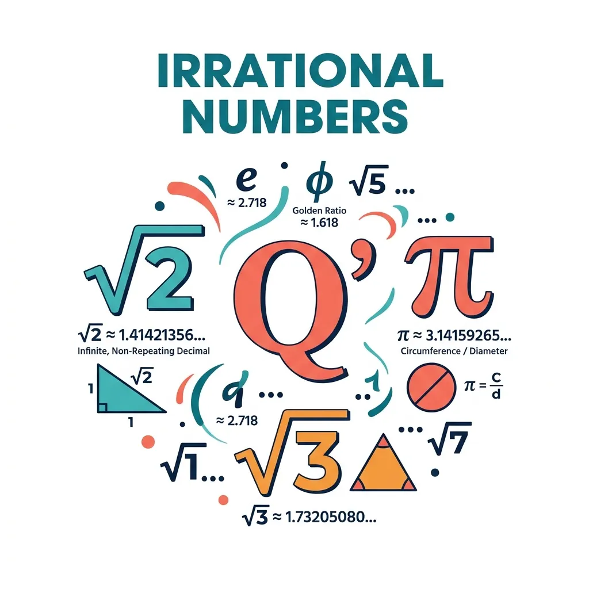
រំលឹកចំណេះដឹង សួស្ដីប្អូនៗ! មុននឹងយើងចាប់ផ្ដើមមេរៀនថ្មីដ៏គួរឱ្យចាប់អារម្មណ៍នេះ តោះយើងមករំលឹកការដោះស្រាយសមីការងាយៗបន្តិចសិន
- តើ \(\displaystyle x\) ស្មើប៉ុន្មាន បើ \(\displaystyle x + 5 = 3\)? យើងទាញបាន \(\displaystyle x = 3 - 5 = -2\)។
- ចុះបើ \(\displaystyle 2x = 5\) វិញ? យើងបាន \(\displaystyle x = \frac{5}{2} = 2.5\)។
ប្អូនៗនៅចាំទេ? ចំនួនដូចជា \(\displaystyle -2\) , \(\displaystyle \frac{5}{2}\) ឬ \(\displaystyle 2.5\) ទាំងអស់នេះ យើងហៅវាថា ចំនួនសនិទាន (\(\displaystyle \mathbb{Q}\))។
តើប្អូនៗនៅចាំចំណេះដឹងពីថ្នាក់ទី ៧ និង ៨ ទាំងនេះទេ? តោះរំលឹកទាំងអស់គ្នា!
០. ចំនួនការេប្រាកដ (Perfect Squares)
ចំនួនការេប្រាកដ គឺជាចំនួនដែលអាចសរសេរជាស្វ័យគុណទី២ នៃចំនួនគត់។
ឧទាហរណ៍ \(\displaystyle 16 = 4^2\), \(\displaystyle 25 = 5^2\), \(\displaystyle 36 = 6^2\) ។
១. ស្វ័យគុណ (Exponents)
\(\displaystyle a^n\) មានន័យថា គេយកចំនួន \(\displaystyle a\) គុណនឹងខ្លួនវា \(\displaystyle n\) ដង។
\(\displaystyle 2^3 = 2 \times 2 \times 2 = 8\) , \(\displaystyle 5^2 = 5 \times 5 = 25\) , \(\displaystyle \left(\frac{3}{4}\right)^2 = \frac{9}{16}\)
២. ចំនួនសនិទាន (Rational Numbers)
ចំនួនសនិទាន គឺជាចំនួនដែលអាចសរសេរជាប្រភាគ \(\displaystyle \frac{p}{q}\) បាន ដែល \(\displaystyle q \neq 0\) ។
ឧទាហរណ៍ \(\displaystyle 3 = \frac{3}{1}\) , \(\displaystyle 0.5 = \frac{1}{2}\) , \(\displaystyle 0.333... = \frac{1}{3}\)
៣. តម្លៃដាច់ខាត \(\displaystyle |5| = 5\) , \(\displaystyle |-5| = 5\) , \(\displaystyle |0| = 0\)
សាកល្បង
ក. \(\displaystyle 3^2 = ?\) ខ. \(\displaystyle (-4)^2 = ?\) គ. \(\displaystyle 2^3 = ?\) ឃ. \(\displaystyle (-2)^3 = ?\) ង. \(\displaystyle |-8| = ?\)
ចម្លើយ ក. \(\displaystyle 9\) ខ. \(\displaystyle 16\) គ. \(\displaystyle 8\) ឃ. \(\displaystyle -8\) ង. \(\displaystyle 8\)
១. ឫសការេ និងចំនួនអសនិទាន
ងាយយល់ ប្អូនៗប្រហែលជាធ្លាប់ស្គាល់ហើយថា ចំនួនជាច្រើនយើងអាចសរសេរជាប្រភាគបាន ដូចជា \(\displaystyle \frac{1}{2}\), \(\displaystyle \frac{3}{4}\), ឬ \(\displaystyle 2=\frac{2}{1}\) ជាដើម។ ប៉ុន្តែចុះបើមានចំនួនខ្លះទៀត ដែលមិនអាចសរសេរជាប្រភាគបានទាល់តែសោះវិញ ដូចជា \(\displaystyle \sqrt{2}\) ឬ \(\displaystyle \sqrt{3}\)? តើយើងហៅវាថាអ្វី? នៅក្នុងគណិតវិទ្យា យើងហៅចំនួនប្រភេទនេះថា ចំនួនអសនិទាន។
វិធីសម្រេចចិត្តថាជាសនិទាន ឬ អសនិទាន ពេលជួបចំនួនថ្មី មិនត្រូវទាយភ្លាមទេ។ សូមសួរខ្លួនឯងតាមលំដាប់ខាងក្រោម
- បើសរសេរជា \(\displaystyle \frac{p}{q}\) បាន ដែល \(\displaystyle q\neq0\) នោះវាជា ចំនួនសនិទាន។
- បើជា \(\displaystyle \sqrt{n}\) ហើយ \(\displaystyle n\) ជាការេប្រាកដ នោះវាជា ចំនួនសនិទាន។ ឧទាហរណ៍ \(\displaystyle \sqrt{49}=7\)។
- បើជា \(\displaystyle \sqrt{n}\) ហើយ \(\displaystyle n\) មិនមែនជាការេប្រាកដ នោះវាជា ចំនួនអសនិទាន។ ឧទាហរណ៍ \(\displaystyle \sqrt{50}=5\sqrt{2}\)។
- បើជា \(\displaystyle \sqrt[3]{n}\) ហើយ \(\displaystyle n\) ជាគូបប្រាកដ នោះវាជា ចំនួនសនិទាន។ ឧទាហរណ៍ \(\displaystyle \sqrt[3]{-8}=-2\)។
- បើជា \(\displaystyle \sqrt[3]{n}\) ហើយ \(\displaystyle n\) មិនមែនជាគូបប្រាកដ នោះវាជា ចំនួនអសនិទាន។ ឧទាហរណ៍ \(\displaystyle \sqrt[3]{4}\)។
តោះយើងមកមើលបញ្ហាមួយ! ពេលខ្លះ ចំនួនសនិទានធម្មតារបស់យើង មិនអាចជួយដោះស្រាយសមីការបានទេ។ ឧទាហរណ៍ ឧបមាថាប្អូនៗមានសួនច្បាររាងការេមួយ ដែលមានក្រឡាផ្ទៃស្មើ \(\displaystyle 3\text{ m}^2\)។ តើប្រវែងជ្រុងនីមួយៗរបស់វាស្មើប៉ុន្មាន? ប្រសិនបើយើងតាងប្រវែងជ្រុងដោយ \(\displaystyle x\) នោះយើងនឹងបានសមីការ \(\displaystyle x^2 = 3\)។
ឥឡូវនេះសាកគិតមើល តើមានចំនួនសនិទានណាដែលគុណនឹងខ្លួនឯងទៅ ស្មើនឹង \(\displaystyle 3\) ដែរឬទេ?
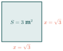
គន្លឹះពិសេសពីគ្រូ (តារាងចំនួនការេប្រាកដ):
ដើម្បីឱ្យការគណនារបស់ប្អូនៗកាន់តែរហ័ស លោកគ្រូអ្នកគ្រូសូមណែនាំឱ្យទន្ទេញចាំចំនួនការេពី \(\displaystyle 0\) ដល់ \(\displaystyle 20\) ឱ្យបានស្ទាត់។ វានឹងជួយសន្សំពេលវេលាបានច្រើនណាស់ក្នុងការប្រឡង!
| \(\displaystyle n\) | \(\displaystyle n^2\) | \(\displaystyle n\) | \(\displaystyle n^2\) | \(\displaystyle n\) | \(\displaystyle n^2\) |
| \(\displaystyle 0\) | \(\displaystyle \textcolor{#2c6464}{0}\) | \(\displaystyle 7\) | \(\displaystyle \textcolor{#2c6464}{49}\) | \(\displaystyle 14\) | \(\displaystyle \textcolor{#2c6464}{196}\) |
| \(\displaystyle 1\) | \(\displaystyle \textcolor{#2c6464}{1}\) | \(\displaystyle 8\) | \(\displaystyle \textcolor{#2c6464}{64}\) | \(\displaystyle 15\) | \(\displaystyle \textcolor{#2c6464}{225}\) |
| \(\displaystyle 2\) | \(\displaystyle \textcolor{#2c6464}{4}\) | \(\displaystyle 9\) | \(\displaystyle \textcolor{#2c6464}{81}\) | \(\displaystyle 16\) | \(\displaystyle \textcolor{#2c6464}{256}\) |
| \(\displaystyle 3\) | \(\displaystyle \textcolor{#2c6464}{9}\) | \(\displaystyle 10\) | \(\displaystyle \textcolor{#2c6464}{100}\) | \(\displaystyle 17\) | \(\displaystyle \textcolor{#2c6464}{289}\) |
| \(\displaystyle 4\) | \(\displaystyle \textcolor{#2c6464}{16}\) | \(\displaystyle 11\) | \(\displaystyle \textcolor{#2c6464}{121}\) | \(\displaystyle 18\) | \(\displaystyle \textcolor{#2c6464}{324}\) |
| \(\displaystyle 5\) | \(\displaystyle \textcolor{#2c6464}{25}\) | \(\displaystyle 12\) | \(\displaystyle \textcolor{#2c6464}{144}\) | \(\displaystyle 19\) | \(\displaystyle \textcolor{#2c6464}{361}\) |
| \(\displaystyle 6\) | \(\displaystyle \textcolor{#2c6464}{36}\) | \(\displaystyle 13\) | \(\displaystyle \textcolor{#2c6464}{169}\) | \(\displaystyle 20\) | \(\displaystyle \textcolor{#2c6464}{400}\) |
ឧទាហរណ៍ទី១ ឧបមាថាយើងចង់រកតម្លៃ \(\displaystyle x\) ដែល \(\displaystyle x^2 = 9\)។
គិតមុនគូ តើលេខអ្វីខ្លះដែលគុណនឹងខ្លួនឯងស្មើនឹង 9? យើងត្រូវរកទាំងចំនួនវិជ្ជមាន និងអវិជ្ជមាន។
ជំហានទី១ រកចំនួនវិជ្ជមាន យើងដឹងហើយថា \(\displaystyle 3 \times 3 = 3^2 = 9\)។ ដូចនេះ \(\displaystyle x=3\) ជាចម្លើយមួយ។
ជំហានទី២ រកចំនួនអវិជ្ជមាន ចុះ \(\displaystyle (-3) \times (-3)\) វិញ? វាក៏ស្មើនឹង \(\displaystyle 9\) ដែរមែនទេ! ព្រោះអវិជ្ជមានគុណអវិជ្ជមានចេញវិជ្ជមាន។ ដូចនេះ \(\displaystyle x=-3\) ក៏ជាចម្លើយដែរ។
ដូចនេះ \(\displaystyle \boxed{x = 3 \text{ ឬ } x = -3}\)
នៅក្នុងគណិតវិទ្យា ចំនួន \(\displaystyle 3\) និង \(\displaystyle -3\) នេះហើយដែលយើងហៅថា ឫសការេ នៃ 9។ ការរកឫសការេនៃ 9 គឺមានន័យសាមញ្ញថា រកមើលតម្លៃ \(\displaystyle x\) ណាខ្លះដែល \(\displaystyle x^2 = 9\) នោះឯង!
គន្លឹះគ្រូ កុំភ្លេចណា! ចំនួនវិជ្ជមានតែងតែមានឫសការេពីរជានិច្ច គឺមួយវិជ្ជមាន និងមួយអវិជ្ជមាន ដែលជាចំនួនផ្ទុយគ្នា។ បើគេសួររក "ឫសការេនៃ 16" ចម្លើយគឺ 4 និង -4។ តែបើគេសរសេរនិមិត្តសញ្ញា \(\displaystyle \sqrt{16}\) គឺសំដៅតែលើតម្លៃវិជ្ជមាន \(\displaystyle 4\) ប៉ុណ្ណោះ។
សាកល្បងខ្លួនឯង ចូររកតម្លៃ \(\displaystyle x\) ដែល \(\displaystyle x^2 = 25\)។
ឧទាហរណ៍ទី២ តោះសាកល្បងជាមួយប្រភាគម្ដង! រក \(\displaystyle x\) ដែល \(\displaystyle x^2 = \frac{25}{4}\)។
គិតមុនគូ ដូចគ្នានឹងចំនួនគត់ដែរ យើងត្រូវរកប្រភាគដែលគុណនឹងខ្លួនឯងស្មើ \(\displaystyle \frac{25}{4}\) ទាំងតម្លៃវិជ្ជមាន និងអវិជ្ជមាន។
ជំហានទី១ រកប្រភាគវិជ្ជមាន យើងដឹងថា \(\displaystyle 5^2 = 25\) និង \(\displaystyle 2^2 = 4\)។ យើងឃើញថា \(\displaystyle \left(\frac{5}{2}\right)^2 = \frac{5^2}{2^2} = \frac{25}{4}\)។
ជំហានទី២ រកប្រភាគអវិជ្ជមាន ដូចដែលយើងបានដឹងពីមុន ចំនួនអវិជ្ជមានលើកជាការេចេញវិជ្ជមាន។ ដូចនេះ \(\displaystyle \left(-\frac{5}{2}\right)^2 = \frac{25}{4}\) ដូចគ្នា។
ដូចនេះ \(\displaystyle \boxed{x = \frac{5}{2} \text{ ឬ } x = -\frac{5}{2}}\)
យើងអាចសន្និដ្ឋានបានថា ចំនួន \(\displaystyle \frac{25}{4}\) មានឫសការេពីរដែលជាចំនួនផ្ទុយគ្នា គឺ \(\displaystyle \frac{5}{2}\) និង \(\displaystyle -\frac{5}{2}\)។
គន្លឹះគ្រូ ប្អូនៗច្រើនតែខ្លាចប្រភាគ! កុំបារម្ភ គ្រាន់តែគិតភាគយក (លើ) ដាច់ដោយឡែក និងភាគបែង (ក្រោម) ដាច់ដោយឡែកទៅជាការស្រេច។ ចងចាំថា ប្រភាគ \(\displaystyle \frac{a}{b}\) គឺជាចំនួនសនិទាន!
សាកល្បងខ្លួនឯង ចូររកតម្លៃ \(\displaystyle x\) ដែល \(\displaystyle x^2 = \frac{16}{9}\)។
ឧទាហរណ៍ទី៣ ឥឡូវយើងត្រលប់មកសំណួរដើមរបស់យើងវិញ រក \(\displaystyle x\) ដែល \(\displaystyle x^2 = 3\)។ តើវានៅលាក់ខ្លួនត្រង់ណា?
គិតមុនគូ លេខ 3 មិនមែនជាការេប្រាកដទេ (ដូចជា 1, 4, 9)។ តោះសាកល្បងស្វែងរកតម្លៃនេះដោយពឹងលើចំនួនទសភាគសនិទាន។
ជំហានទី១ សាកល្បងជាមួយលេខគត់ បើឱ្យ \(\displaystyle x = 1 \implies 1^2 = 1 < 3\) (នៅតូចជាង 3)
បើឱ្យ \(\displaystyle x = 2 \implies 2^2 = 4 > 3\) (អូសហួសបាត់!)
អញ្ចឹង \(\displaystyle x\) ត្រូវតែនៅចន្លោះ 1 និង 2។
ជំហានទី២ សាកល្បងជាមួយលេខទសភាគ បើឱ្យ \(\displaystyle x = 1.5 \implies (1.5)^2 = 2.25 < 3\) (នៅតូចជាង 3 ដែរ)
បើឱ្យ \(\displaystyle x = 1.7 \implies (1.7)^2 = 2.89 < 3\) (ខិតជិតមែនទែនហើយ!)
បើឱ្យ \(\displaystyle x = 1.8 \implies (1.8)^2 = 3.24 > 3\) (ហួសទៀតហើយ!)
ជំហានទី៣ ទាញសេចក្តីសន្និដ្ឋាន តាមការសាកល្បងនេះ យើងឃើញច្បាស់ថា គ្មានចំនួនសនិទានណាមួយ (ទសភាគបញ្ចប់) ដែលមានការេស្មើនឹង 3 បេះបិទនោះទេ។
ដូចនេះ ដោយសារតែបញ្ហានេះហើយ ទើបអ្នកគណិតវិទ្យាបង្កើតនិមិត្តសញ្ញាថ្មីមួយគឺ \(\displaystyle \sqrt{3}\) (អានថា ឫសទីពីរនៃ 3) ដើម្បីតំណាងឱ្យចំនួនដែល \(\displaystyle (\sqrt{3})^2 = 3\)។
ដូចនេះ \(\displaystyle \boxed{x = \sqrt{3} \text{ ឬ } x = -\sqrt{3}}\)
យើងហៅ \(\displaystyle \sqrt{3}\) នេះថាជា ចំនួនអសនិទាន ដែលមានតម្លៃប្រហែល \(\displaystyle \sqrt{3} \approx 1.7320...\)។
ចំណាំបន្តិច ក្នុងនិមិត្តសញ្ញា \(\displaystyle \sqrt{3}\) នេះ សញ្ញា \(\displaystyle \sqrt{\phantom{x}}\) ត្រូវបានគេហៅថា រ៉ាឌីកាល់។ វាមាន សន្ទស្សន៍ លាក់ទុកស្មើនឹង 2 (តាមពិតត្រូវសរសេរ \(\displaystyle \sqrt[2]{3}\) តែគេនិយមលុបចោល) ហើយលេខ 3 នៅខាងក្នុងនោះហៅថា រ៉ាឌីកង់។
កុំច្រឡំ សិស្សច្រើនតែច្រឡំថា \(\displaystyle \sqrt{3} = 1.73\)។ តាមពិត \(\displaystyle \sqrt{3}\) គឺជា "តម្លៃពិតប្រាកដ" (Exact value) រីឯ \(\displaystyle 1.73\) គ្រាន់តែជា "តម្លៃប្រហែល" (Approximate value) ប៉ុណ្ណោះ។ កុំប្រើសញ្ញា \(\displaystyle =\) ជំនួសសញ្ញា \(\displaystyle \approx\) ឱ្យសោះណា!
ពន្យល់ពិសេសពីគ្រូ មានឆ្ងល់ទេប្អូនៗ ថាម៉េចបានជាគេសរសេរត្រឹមតែ \(\displaystyle \sqrt{3}\) ជាជាង \(\displaystyle \sqrt[2]{3}\) ដូច្នេះ? តាមពិតទៅ ដោយសារតែឫសការេត្រូវបានយើងយកមកប្រើប្រាស់ញឹកញាប់បំផុតពេក គេក៏ឯកភាពគ្នាលុបលេខ 2 នោះចេញទៅ ដើម្បីឱ្យរហ័សក្នុងការសរសេរ។ ដូច្នេះ កុំច្រឡំថា \(\displaystyle \sqrt{3}\) គ្មានសន្ទស្សន៍ឱ្យសោះណា៎! វាមានសន្ទស្សន៍ 2 លាក់ទុកជានិច្ច។ មធ្យោបាយងាយៗសម្រាប់ចងចាំគឺ "រ៉ាឌីកាល់ ប្រៀបដូចជាគម្របឆ្នាំង រីឯរ៉ាឌីកង់ ប្រៀបដូចជាម្ហូបនៅខាងក្នុងអញ្ចឹងឯង!"
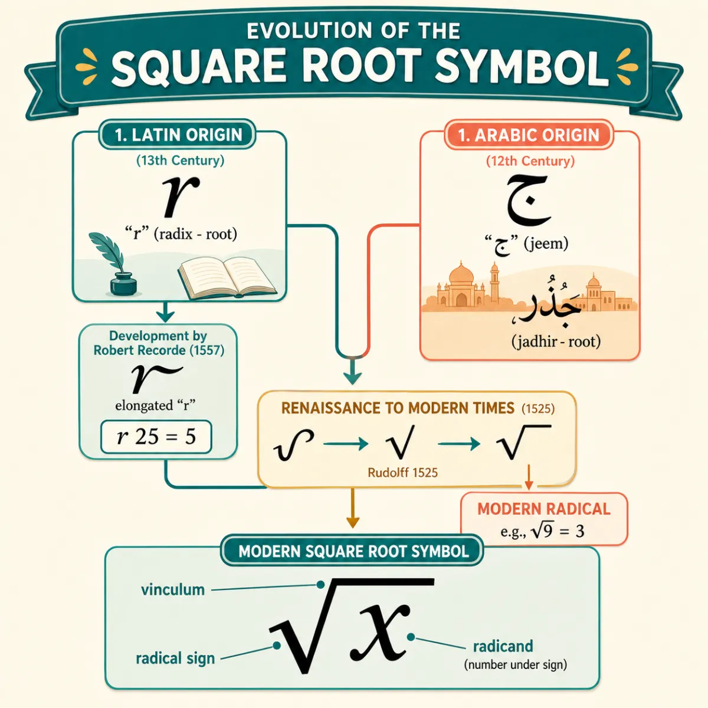
ទ្រឹស្តីនៃប្រភពសញ្ញាឫសការេ
ប្រវត្តិសញ្ញាឫសការេ
សញ្ញាឫសការេ \(\displaystyle \sqrt{\quad}\) ត្រូវបានណែនាំឱ្យប្រើប្រាស់ជាផ្លូវការនៅក្នុងឆ្នាំ ១៥២៥ ដោយគណិតវិទូជនជាតិអាល្លឺម៉ង់ឈ្មោះ Christoph Rudolff នៅក្នុងសៀវភៅ Coss។ ប៉ុន្តែមានទ្រឹស្តីពីរផ្សេងគ្នាអំពីប្រភពដើមនៃសញ្ញានេះ
- ទ្រឹស្តីទី១ គេជឿថាសញ្ញានេះមានប្រភពមកពីការសរសេរទម្រង់អក្សរឡាតាំង "r" តូច ដែលតំណាងឱ្យពាក្យ radix (ប្រែថា ឫស)។
- ទ្រឹស្តីទី២ (តាមទស្សនៈសកលក្នុងកម្មវិធី IB) បង្ហាញថាវាអាចវិវត្តចេញពីអក្សរអារ៉ាប់ "jeem" ដែលជាអក្សរដំបូងនៃពាក្យ "jadhir" (មានន័យថាឫស) ប្រើប្រាស់ដោយគណិតវិទូអារ៉ាប់ Al-Qalasadi នៅសតវត្សទី១៥ មុនលោក Rudolff ទៅទៀត។
ចំណែកឯបន្ទាត់ផ្ដេកនៅពីលើរ៉ាឌីកង់ ត្រូវបានបន្ថែមនៅពេលក្រោយដោយ René Descartes ក្នុងឆ្នាំ ១៦៣៧ ដើម្បីបញ្ជាក់ពីទំហំនៃកន្សោមដែលស្ថិតនៅក្រោមឫស។
លំហាត់អនុវត្តន៍៖ ចូរចំណាត់ថ្នាក់ចំនួនខាងក្រោម ថាជាចំនួនសនិទាន ឬ អសនិទាន៖
- ក. \(\displaystyle \sqrt{4}\)
- ខ. \(\displaystyle \sqrt{5}\)
- គ. \(\displaystyle \sqrt{9}\)
ចម្លើយ និង ការពន្យល់៖
- ក. \(\displaystyle \sqrt{4} = 2\) ដែលជាចំនួនគត់។ ដូចនេះ \(\displaystyle \sqrt{4}\) ជា ចំនួនសនិទាន។
- ខ. \(\displaystyle \sqrt{5}\) មិនអាចបញ្ចេញពីឫសបានទេ ព្រោះ \(\displaystyle 5\) មិនមែនជាការេប្រាកដ។ ដូចនេះ \(\displaystyle \sqrt{5}\) ជា ចំនួនអសនិទាន។
- គ. \(\displaystyle \sqrt{9} = 3\) ដែលជាចំនួនគត់។ ដូចនេះ \(\displaystyle \sqrt{9}\) ជា ចំនួនសនិទាន។
ការស្ថាបនាចំនួនអសនិទានតាមធរណីមាត្រ (Spiral of Roots)
តើចំនួនដូចជា \(\displaystyle \sqrt{2}, \sqrt{3}, \sqrt{5}, \dots\) មានរូបរាងពិតយ៉ាងដូចម្តេច? យើងអាចគូរវាបានយ៉ាងងាយដោយប្រើទ្រឹស្ដីបទពីតាក័រលើត្រីកោណកែង
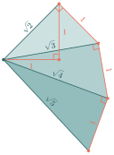
តើប្អូនៗចាប់អារម្មណ៍ទេ? តាមរយៈគំនូរនេះ យើងឃើញយ៉ាងច្បាស់ថា \(\displaystyle \sqrt{2}, \sqrt{3}, \sqrt{5}\) មិនមែនគ្រាន់តែជាលេខអរូបីដែលយើងស្រមៃនឹកឃើញនោះទេ! ពួកវាគឺជារង្វាស់ ប្រវែងពិតប្រាកដ ដែលបង្កើតចេញពីត្រីកោណកែង។ ហេតុនេះ \(\displaystyle \sqrt{3}\) ជាចំនួនអសនិទាន ដែលយើងមិនអាចសរសេរជាទម្រង់ប្រភាគបានឡើយ។
ឧទាហរណ៍ទី៤ ចុះបើគ្រូឱ្យរក \(\displaystyle x\) ដែល \(\displaystyle x^2 = -3\) វិញ? តើមានចម្លើយដែរឬទេ?
គិតមុនគូ យើងដឹងថាការរកតម្លៃ \(\displaystyle x\) គឺស្វែងរកលេខដែលគុណនឹងខ្លួនឯងស្មើនឹង \(\displaystyle -3\)។
ជំហានទី១ សាកល្បងលេខវិជ្ជមាន លេខវិជ្ជមាន គុណនឹងលេខវិជ្ជមាន ចេញលេខវិជ្ជមាន។ (ឧទាហរណ៍ \(\displaystyle 2 \times 2 = 4\))
ជំហានទី២ សាកល្បងលេខអវិជ្ជមាន លេខអវិជ្ជមាន គុណនឹងលេខអវិជ្ជមាន ក៏ចេញលេខវិជ្ជមានដែរ។ (ឧទាហរណ៍ \(\displaystyle (-2) \times (-2) = 4\))
ដូចនេះ ប្រាកដជាគ្មានលេខណាមួយដែលគុណនឹងខ្លួនឯងទៅចេញដកទេ! ព្រោះចំនួនណាក៏ដោយ ឱ្យតែលើកជាការេ គឺតែងតែចេញវិជ្ជមានជានិច្ច។
ដូចនេះ \(\displaystyle \boxed{\text{គ្មានចម្លើយក្នុងចំនួនពិតទេ}}\)
សូមចងចាំថា ក្នុងចំនួនពិត ចំនួនអវិជ្ជមានគ្មានឫសការេទេ!
បើ \(\displaystyle a > 0\) និង \(\displaystyle x^2 = a\) គេបាន \(\displaystyle x = \sqrt{a}\) និង \(\displaystyle x = -\sqrt{a}\)។
បើ \(\displaystyle a = 0\) នោះ \(\displaystyle x = 0\) តែមួយគត់។
បើ \(\displaystyle a < 0\) នោះគ្មានចម្លើយក្នុងចំនួនពិតទេ។
គន្លឹះងាយៗសម្រាប់ចាំ នៅពេលដែលគេឱ្យរកឫសការេនៃចំនួនណាមួយ ប្អូនៗគ្រាន់តែសួរខ្លួនឯងថា "តើលេខអ្វីទៅ ដែលគុណនឹងខ្លួនឯងស្មើនឹងចំនួននេះ?" បើវាជាចំនួនការេប្រាកដ (ដូចជា \(\displaystyle 16, 25, 36\)) នោះយើងនឹងទទួលបានចម្លើយជាចំនួនគត់យ៉ាងងាយស្រួល។ បើវាមិនមែនជាការេប្រាកដទេ នោះវាជាចំនួនអសនិទាន។ ចំណុចត្រូវប្រយ័ត្ន ចំនួនវិជ្ជមានតែងតែមានឫសការេពីរជានិច្ច (បូកមួយ ដកមួយ) ចំណែកឯចំនួនអវិជ្ជមានគឺគ្មានឫសការេក្នុងចំនួនពិតទេណា៎!
ឧទាហរណ៍ទី៥ តោះ អនុវត្តជាមួយគ្នា! រកឫសការេនៃសមីការខាងក្រោម
- ក. \(\displaystyle x^2 = 16\)
- ខ. \(\displaystyle x^2 = 7\)
- គ. \(\displaystyle x^2 = \frac{25}{4}\)
- ឃ. \(\displaystyle x^2 = -81\)
- ង. \(\displaystyle x^2 = 1\)
- ច. \(\displaystyle x^2 = 0\)
គិតមុនគូ ចងចាំក្បួនទាំង៣ ១. ចំនួនវិជ្ជមានមានឫសការេពីរ (បូកនិងដក) ២. សូន្យមានឫសការេតែមួយគត់ (គឺសូន្យ) ៣. ចំនួនអវិជ្ជមានគ្មានឫសការេទេ
ជំហានដោះស្រាយ
- ក. \(\displaystyle x^2 = 16 \implies 4^2=16\) និង \(\displaystyle (-4)^2=16\)។ ដូចនេះ \(\displaystyle x = 4\) ឬ \(\displaystyle x = -4\)។
- ខ. \(\displaystyle x^2 = 7 \implies 7\) មិនមែនជាការេប្រាកដទេ។ ដូចនេះវាជាចំនួនអសនិទាន \(\displaystyle x = \sqrt{7}\) ឬ \(\displaystyle x = -\sqrt{7}\)។
- គ. \(\displaystyle x^2 = \frac{25}{4} \implies \left(\frac{5}{2}\right)^2=\frac{25}{4}\) និង \(\displaystyle \left(-\frac{5}{2}\right)^2=\frac{25}{4}\)។ ដូចនេះ \(\displaystyle x = \frac{5}{2}\) ឬ \(\displaystyle x = -\frac{5}{2}\)។
- ឃ. \(\displaystyle x^2 = -81 \implies\) ជាចំនួនអវិជ្ជមាន។ ដូចនេះ គ្មានចម្លើយ ព្រោះគ្មានចំនួនពិតណាលើកជាការេចេញអវិជ្ជមានទេ។
- ង. \(\displaystyle x^2 = 1 \implies 1^2=1\) និង \(\displaystyle (-1)^2=1\)។ ដូចនេះ \(\displaystyle x = 1\) ឬ \(\displaystyle x = -1\)។
- ច. \(\displaystyle x^2 = 0 \implies 0^2=0\)។ ដូចនេះមានចម្លើយតែមួយគត់គឺ \(\displaystyle x = 0\)។
ដូចនេះ អនុវត្តតាមក្បួនខាងលើ យើងអាចដោះស្រាយបានគ្រប់ករណីយ៉ាងងាយស្រួល។
រកឫសការេនៃចំនួនខាងក្រោម
- ក. \(\displaystyle 0.04\)
- ខ. \(\displaystyle 0.01\)
- គ. \(\displaystyle 5\)
- ឃ. \(\displaystyle -1\)
- ង. \(\displaystyle \frac{25}{36}\)
- ច. \(\displaystyle 0.1\)
ចំណុចដែលសិស្សតែងតែច្រឡំញឹកញាប់
កំហុសទី ១ សិស្សច្រើនសរសេរ \(\displaystyle \sqrt{9} = \pm 3\)
✗ \(\displaystyle \sqrt{9} = \pm 3\) ✓ \(\displaystyle \sqrt{9} = 3\) (ចំណាំ សញ្ញា \(\displaystyle \sqrt{\phantom{x}}\) គឺតំណាងឱ្យឫសវិជ្ជមានជានិច្ច)
ប៉ុន្តែបើគេសួររកចម្លើយនៃ \(\displaystyle x^2 = 9\) វិញ ទើបវាមានចម្លើយពីរគឺ \(\displaystyle x = 3\) ឬ \(\displaystyle x = -3\) ។
កំហុសទី ២ ការរកឫសការេនៃចំនួនអវិជ្ជមាន
✗ \(\displaystyle \sqrt{-4} = -2\) ✓ \(\displaystyle \sqrt{-4}\) គ្មានតម្លៃក្នុងចំនួនពិតទេ ព្រោះចំនួនអវិជ្ជមានគ្មានឫសការេក្នុងចំនួនពិត!
ការអនុវត្តជាក់ស្តែង ការរកប្រវែងជ្រុងសួនច្បារការេ
ឧបមាថាគ្រួសារប្អូនមានដីសួនច្បាររាងការេមួយដែលមានក្រឡាផ្ទៃ \(\displaystyle 50\text{ m}^2\)។ តើជ្រុងម្ខាងនៃសួនច្បារនោះមានប្រវែងប៉ុន្មានម៉ែត្រ?
- តាមរូបមន្តក្រឡាផ្ទៃការេ \(\displaystyle S = x^2\) ដែល \(\displaystyle x\) ជាប្រវែងជ្រុង។
- នាំឱ្យ \(\displaystyle x^2 = 50\)
- ដោយសារប្រវែងត្រូវតែវិជ្ជមាន យើងទាញបាន \(\displaystyle x = \sqrt{50}\)
យើងដឹងថា \(\displaystyle \sqrt{49} = 7\) ដូច្នេះ \(\displaystyle \sqrt{50}\) គឺមានប្រវែងប្រហែល \(\displaystyle 7\) ម៉ែត្រជាង។ បើយើងគណនាតាមម៉ាស៊ីនគិតលេខ យើងបាន \(\displaystyle x = \sqrt{50} = \sqrt{25 \times 2} = 5\sqrt{2} \approx 7.07\text{ m}\)។ នេះបញ្ជាក់ថាចំនួនអសនិទានគឺមានវត្តមានយ៉ាងពិតប្រាកដក្នុងការវាស់វែងជាក់ស្តែង!
២. ឫសគូប
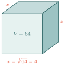
ងាយយល់ ប្អូនៗដឹងទេថា ឫសគូបគឺស្រដៀងនឹងឫសការេដែរ គ្រាន់តែវាសម្រាប់វិមាត្រទី៣ (ជារូបរាងគូប) ប៉ុណ្ណោះ។ ឧទាហរណ៍ ឧបមាថាប្អូនៗមានប្រអប់គូបមួយដែលមានមាឌ \(\displaystyle 64\text{ m}^3\)។ តើជ្រុងរបស់វាមានប្រវែងប៉ុន្មានទៅ? បើយើងតាងប្រវែងជ្រុងដោយ \(\displaystyle x\) នោះយើងនឹងបានសមីការ \(\displaystyle x^3 = 64\) ។ ដើម្បីរក \(\displaystyle x\) យើងត្រូវប្រើឫសគូប ដែលបានជា \(\displaystyle x = \sqrt[3]{64} = 4\) ។ អូ! កុំភ្លេចណា៎ ចំណុចពិសេសមួយទៀតរបស់ឫសគូប គឺចំនួនអវិជ្ជមានក៏អាចមានឫសគូបបានដែរ! (ខុសពីឫសការេមែនទេ?)
គន្លឹះពិសេសពីគ្រូ (តារាងចំនួនគូបប្រាកដ):
ដើម្បីឱ្យការគណនារបស់ប្អូនៗកាន់តែរហ័ស លោកគ្រូអ្នកគ្រូសូមណែនាំឱ្យទន្ទេញចាំចំនួនគូបពី \(\displaystyle 1\) ដល់ \(\displaystyle 10\) ឱ្យបានស្ទាត់។ វានឹងជួយសន្សំពេលវេលាបានច្រើនណាស់ក្នុងការប្រឡង!
| \(\displaystyle n\) | \(\displaystyle n^3\) | \(\displaystyle n\) | \(\displaystyle n^3\) |
| \(\displaystyle 1\) | \(\displaystyle \textcolor{#2c6464}{1}\) | \(\displaystyle 6\) | \(\displaystyle \textcolor{#2c6464}{216}\) |
| \(\displaystyle 2\) | \(\displaystyle \textcolor{#2c6464}{8}\) | \(\displaystyle 7\) | \(\displaystyle \textcolor{#2c6464}{343}\) |
| \(\displaystyle 3\) | \(\displaystyle \textcolor{#2c6464}{27}\) | \(\displaystyle 8\) | \(\displaystyle \textcolor{#2c6464}{512}\) |
| \(\displaystyle 4\) | \(\displaystyle \textcolor{#2c6464}{64}\) | \(\displaystyle 9\) | \(\displaystyle \textcolor{#2c6464}{729}\) |
| \(\displaystyle 5\) | \(\displaystyle \textcolor{#2c6464}{125}\) | \(\displaystyle 10\) | \(\displaystyle \textcolor{#2c6464}{1000}\) |
ឧទាហរណ៍ទី៦ តោះសាកល្បង រកតម្លៃ \(\displaystyle x\) ដែល ក. \(\displaystyle x^3 = 64\) និង ខ. \(\displaystyle x^3 = -27\)
គិតមុនគូ ការរកឫសគូបគឺសួរថា "តើលេខអ្វីដែលគុណនឹងខ្លួនឯងបីដង (\(\displaystyle x \times x \times x\)) ទើបស្មើនឹងចំនួននេះ?"។ ប្រយ័ត្នណា! វាខុសពីឫសការេ។
ជំហានទី១ រក \(\displaystyle x^3 = 64\) យើងសាកល្បងគុណលេខ \(\displaystyle 4 \times 4 \times 4 = 4^3 = 64\)។ ចុះ \(\displaystyle (-4)^3\) វិញ? \(\displaystyle (-4) \times (-4) \times (-4) = -64\) ណា៎! (មិនមែន \(\displaystyle 64\) ទេ)។ ដូចនេះ មានតែ \(\displaystyle x=4\) មួយគត់ដែលត្រឹមត្រូវ។
ជំហានទី២ រក \(\displaystyle x^3 = -27\) យើងសាកល្បងលេខអវិជ្ជមានម្តង \(\displaystyle (-3) \times (-3) \times (-3) = (-3)^3 = -27\)។ ដូចនេះ មានតែ \(\displaystyle x=-3\) មួយគត់ដែលត្រឹមត្រូវ។
ដូចនេះ \(\displaystyle \boxed{x = \sqrt[3]{64} = 4}\) និង \(\displaystyle \boxed{x = \sqrt[3]{-27} = -3}\)
គន្លឹះគ្រូ ប្អូនៗសង្កេតឃើញទេថា គ្រប់ចំនួនទាំងអស់ (ទោះវិជ្ជមាន ឬអវិជ្ជមានក្ដី) សុទ្ធតែមានឫសគូបតែមួយគត់! ឫសគូបនៃចំនួនវិជ្ជមានគឺវិជ្ជមាន ហើយឫសគូបនៃចំនួនអវិជ្ជមានគឺអវិជ្ជមាន។ វាខុសពីឫសការេដាច់ស្រឡះ ដែលឫសការេមិនអាចអវិជ្ជមានបាន។
សាកល្បងខ្លួនឯង ចូររកឫសគូបនៃ \(\displaystyle 125\) និង \(\displaystyle -8\)។
ឧទាហរណ៍ទី៧ តើមានអ្វីកើតឡើងបើគេឱ្យរក \(\displaystyle x\) ដែល \(\displaystyle x^3 = 17\) និង \(\displaystyle x^3 = -17\)?
គិតមុនគូ លេខ 17 មិនមែនជាគូបប្រាកដទេ (ដូចជា 8 ឬ 27 ឡើយ)។ ដូច្នេះចម្លើយវានឹងក្លាយជាចំនួនអសនិទាន។
ជំហានទី១ រក \(\displaystyle x^3 = 17\) បើ \(\displaystyle 2^3 = 8\) (តូចពេក), ហើយ \(\displaystyle 3^3 = 27\) (ធំពេក) នោះ \(\displaystyle x\) ត្រូវនៅចន្លោះ 2 និង 3។ ដោយគ្មានចំនួនសនិទានណាគូបទៅស្មើ 17 នោះទេ យើងបង្កើតនិមិត្តសញ្ញា \(\displaystyle \sqrt[3]{17}\) ដើម្បីតំណាងវា។
ជំហានទី២ រក \(\displaystyle x^3 = -17\) ដោយសារវាជាចំនួនអវិជ្ជមាន ឫសគូបរបស់វាក៏ជាអវិជ្ជមានដែរ។ នោះគឺ \(\displaystyle -\sqrt[3]{17}\) ឬអាចសរសេរថា \(\displaystyle \sqrt[3]{-17}\)។
ដូចនេះ \(\displaystyle \boxed{x = \sqrt[3]{17}}\) និង \(\displaystyle \boxed{x = \sqrt[3]{-17} = -\sqrt[3]{17}}\)
ចំណាំ \(\displaystyle \sqrt[3]{\phantom{x}}\) គឺជា រ៉ាឌីកាល់ ដែលមានសន្ទស្សន៍ 3 ហើយ 17 គឺជា រ៉ាឌីកង់។
បើ \(\displaystyle x^3 = a\) គេបាន \(\displaystyle x = \sqrt[3]{a}\) ដែល \(\displaystyle a\) អាចវិជ្ជមាន ឬ អវិជ្ជមាន ។
រកឫសគូបនៃចំនួនខាងក្រោម
- ក. \(\displaystyle x^3 = -64\)
- ខ. \(\displaystyle x^3 = -1\)
- គ. \(\displaystyle x^3 = 1\)
- ឃ. \(\displaystyle x^3 = -8\)
- ង. \(\displaystyle x^3 = 4\)
- ច. \(\displaystyle x^3 = 0\)
- ឆ. \(\displaystyle x^3 = \frac{1}{8}\)
- ជ. \(\displaystyle x^3 = \frac{27}{125}\)
- ឈ. \(\displaystyle x^3 = -\frac{1}{1000}\)
ចម្លើយ
- ក. \(\displaystyle (-4)^3 = -64\)
ដូចនេះ \(\displaystyle x = \sqrt[3]{-64} = -4\) ។ - ខ. \(\displaystyle (-1)^3 = -1\)
ដូចនេះ \(\displaystyle x = \sqrt[3]{-1} = -1\) ។ - គ. \(\displaystyle 1^3 = 1\)
ដូចនេះ \(\displaystyle x = \sqrt[3]{1} = 1\) ។ - ឃ. \(\displaystyle (-2)^3 = -8\)
ដូចនេះ \(\displaystyle x = \sqrt[3]{-8} = -2\) ។ - ង. គ្មានចំនួនសនិទានណាដែលគូបវាស្មើនឹង \(\displaystyle 4\) ទេ ។
ហេតុនេះ \(\displaystyle x = \sqrt[3]{4}\) ។ - ច. \(\displaystyle 0^3 = 0\)
ដូចនេះ \(\displaystyle x = 0\) ។ - ឆ. \(\displaystyle \left(\frac{1}{2}\right)^3 = \frac{1}{8}\)
ដូចនេះ \(\displaystyle x = \sqrt[3]{\frac{1}{8}} = \frac{1}{2}\) ។ - ជ. \(\displaystyle \left(\frac{3}{5}\right)^3 = \frac{27}{125}\)
ដូចនេះ \(\displaystyle x = \sqrt[3]{\frac{27}{125}} = \frac{3}{5}\) ។ - ឈ. \(\displaystyle \left(-\frac{1}{10}\right)^3 = -\frac{1}{1000}\)
ដូចនេះ \(\displaystyle x = \sqrt[3]{-\frac{1}{1000}} = -\frac{1}{10}\) ។
រកឫសគូបនៃចំនួនខាងក្រោម
- ក. \(\displaystyle 0.008\)
- ខ. \(\displaystyle -0.001\)
- គ. \(\displaystyle 0.08\)
- ឃ. \(\displaystyle -0.4\)
- ក. \(\displaystyle \sqrt[3]{-8} = ?\)
- ខ. \(\displaystyle \sqrt[3]{27} = ?\)
- គ. \(\displaystyle \sqrt{-4}\) មានឬគ្មាន?
ចម្លើយ
ក. \(\displaystyle -2\) ខ. \(\displaystyle 3\) គ. គ្មាន
រំលឹកចំណេះដឹងពីថ្នាក់ទី ៨
១. លក្ខណបំបែក \(\displaystyle a(b + c) = ab + ac\)
ឧទាហរណ៍ \(\displaystyle 3(x + 2) = 3x + 6\)
២. ផលគុណទ្វេធា (FOIL) \(\displaystyle (a + b)(c + d) = ac + ad + bc + bd\)
ឧទាហរណ៍ \(\displaystyle (2+3)(4+1) = 8 + 2 + 12 + 3 = 25\)
៣. ផលសងការេ
\(\displaystyle (a - b)(a + b) = a^2 - b^2\)
ឧទាហរណ៍ \(\displaystyle (\sqrt{3} - 2)(\sqrt{3} + 2) = 3 - 4 = -1\)
៣. ប្រមាណវិធីលើរ៉ាឌីកាល់
ពាក្យពេចន៍ពីគ្រូ
ប្អូនៗប្រហែលជាគិតថាការគណនាលេខដែលមានឫសការេ ឬឫសគូប មើលទៅស្មុគស្មាញណាស់! ប៉ុន្តែតាមពិតទៅ វាងាយស្រួលដូចនឹងការបូកដកអក្សរ (អថេរ) អញ្ចឹងដែរ។ គ្រាន់តែយើងមានក្បួនខ្នាតច្បាស់លាស់សម្រាប់ធ្វើវា។ តោះ! យើងទៅស្វែងយល់ទាំងអស់គ្នា។
ឥឡូវនេះយើងសង្កេតមើលរបៀបបូក ដក គុណ និងចែកចំនួនដែលមានរ៉ាឌីកាល់។ ការយល់ដឹងពីរបៀបគណនាទាំងនេះគឺសំខាន់ណាស់សម្រាប់ការសម្រួលកន្សោមគណិតវិទ្យា។
ផ្លូវធ្វើលំហាត់រ៉ាឌីកាល់ដោយខ្លួនឯង
- មើលសន្ទស្សន៍សិន ឫសការេត្រូវរកគូកត្តា, ឫសគូបត្រូវរកកត្តាបីដូចគ្នា។
- បំបែករ៉ាឌីកង់ជាផលគុណដែលមានការេប្រាកដ ឬគូបប្រាកដ។
- សម្រួលរ៉ាឌីកាល់មុនបូកដក។ បូកដកបានតែពេលរ៉ាឌីកង់ និងសន្ទស្សន៍ដូចគ្នា។
- ចំពោះផលគុណ ឬផលចែក អាចដាក់ចូលក្នុងរ៉ាឌីកាល់តែមួយបាន ប្រសិនបើសន្ទស្សន៍ដូចគ្នា។
- បើមានរ៉ាឌីកាល់នៅភាគបែង ត្រូវបំបាត់វាជាចុងក្រោយ ដើម្បីឱ្យចម្លើយមានទម្រង់ស្តង់ដារ។
៣.១. វិធីគុណរ៉ាឌីកាល់
ឧទាហរណ៍ទី៨ គេអាចប្រៀបធៀប \(\displaystyle \sqrt{4} \times \sqrt{9}\) និង \(\displaystyle \sqrt{4 \times 9}\) ដូចខាងក្រោម
គិតមុនគូ តើយើងអាចគុណលេខដែលនៅក្រៅឫសបញ្ចូលគ្នាបានទេ? តោះសាកល្បងគណនាដាច់ដោយឡែក។
ជំហានទី១ គណនា \(\displaystyle \sqrt{4} \times \sqrt{9}\) យើងមាន \(\displaystyle \sqrt{4} = 2\) និង \(\displaystyle \sqrt{9} = 3\)។ ហេតុនេះ \(\displaystyle \sqrt{4} \times \sqrt{9} = 2 \times 3 = 6\)។
ជំហានទី២ គណនា \(\displaystyle \sqrt{4 \times 9}\) យើងមាន \(\displaystyle 4 \times 9 = 36\)។ ហេតុនេះ \(\displaystyle \sqrt{4 \times 9} = \sqrt{36} = 6\)។
ដូចនេះ \(\displaystyle \boxed{\sqrt{4} \times \sqrt{9} = \sqrt{4 \times 9}}\)
ឧទាហរណ៍ទី៩ គេអាចប្រៀបធៀប \(\displaystyle \sqrt[3]{8} \times \sqrt[3]{27}\) និង \(\displaystyle \sqrt[3]{8 \times 27}\) ដូចខាងក្រោម
គិតមុនគូ ធ្វើដូចឫសការេដែរ តោះសាកល្បងគណនាមើលថាតើឫសគូបមានលក្ខណៈដូចគ្នាឬទេ។
ជំហានទី១ គណនា \(\displaystyle \sqrt[3]{8} \times \sqrt[3]{27}\) យើងមាន \(\displaystyle \sqrt[3]{8} = 2\) និង \(\displaystyle \sqrt[3]{27} = 3\)។ ហេតុនេះ \(\displaystyle \sqrt[3]{8} \times \sqrt[3]{27} = 2 \times 3 = 6\)។
ជំហានទី២ គណនា \(\displaystyle \sqrt[3]{8 \times 27}\) យើងមាន \(\displaystyle 8 \times 27 = 216\)។ ហេតុនេះ \(\displaystyle \sqrt[3]{8 \times 27} = \sqrt[3]{216} = \sqrt[3]{6^3} = 6\)។
ដូចនេះ \(\displaystyle \boxed{\sqrt[3]{8} \times \sqrt[3]{27} = \sqrt[3]{8 \times 27}}\)
ផលគុណនៃរ៉ាឌីកាល់ដែលមានសន្ទស្សន៍ដូចគ្នាស្មើនឹងរ៉ាឌីកាល់នៃផលគុណ។
\(\displaystyle \sqrt{a} \times \sqrt{b} = \sqrt{ab}\) ចំពោះ \(\displaystyle a \ge 0\) , \(\displaystyle b \ge 0\)
\(\displaystyle \sqrt[3]{a} \times \sqrt[3]{b} = \sqrt[3]{ab}\) ចំពោះ \(\displaystyle a\) , \(\displaystyle b\) អាចវិជ្ជមានឬអវិជ្ជមាន
គន្លឹះ នៅពេលគុណរ៉ាឌីកាល់ដែលមានមេគុណ ត្រូវ
• គុណមេគុណខាងក្រៅ ជាមួយនឹងមេគុណខាងក្រៅ
• គុណរ៉ាឌីកង់ខាងក្នុង ជាមួយនឹងរ៉ាឌីកង់ខាងក្នុង
រូបមន្ត \(\displaystyle m\sqrt{a} \times n\sqrt{b} = (m \times n)\sqrt{a \times b}\)
កុំច្រឡំថា \(\displaystyle \sqrt{a} + \sqrt{b} = \sqrt{a+b}\) ណា! លក្ខណៈនេះត្រឹមត្រូវតែករណី វិធីគុណ និង វិធីចែក ប៉ុណ្ណោះ។
កំហុសធំ \(\displaystyle \sqrt{a + b} \neq \sqrt{a} + \sqrt{b}\)
✗ \(\displaystyle \sqrt{9 + 16} = \sqrt{9} + \sqrt{16} = 3 + 4 = 7\)
✓ \(\displaystyle \sqrt{9 + 16} = \sqrt{25} = 5\)
វិធីគុណ ✓ ត្រូវ វិធីបូក ✗ មិនត្រូវ
ឧទាហរណ៍ទី១០ គណនាផលគុណនៃរ៉ាឌីកាល់ខាងក្រោម
- ក. \(\displaystyle \sqrt{2} \times \sqrt{8}\)
- ខ. \(\displaystyle \sqrt{3} \times \sqrt{27}\)
- គ. \(\displaystyle \sqrt[3]{2} \times \sqrt[3]{4}\)
- ឃ. \(\displaystyle \sqrt[3]{2} \times \sqrt[3]{\frac{1}{16}}\)
- ង. \(\displaystyle \sqrt{2} \times \sqrt{32}\)
- ច. \(\displaystyle \sqrt{50} \times \sqrt{2}\)
គិតមុនគូ រ៉ាឌីកង់នីមួយៗភាគច្រើនមិនមែនជាការេប្រាកដទេ (ឧ. \(\displaystyle \sqrt{2}\)) ប៉ុន្តែបើយើងគុណវាបញ្ចូលគ្នា វាអាចបង្កើតបានជាការេប្រាកដ។
ជំហានដោះស្រាយ
- ក. \(\displaystyle \sqrt{2} \times \sqrt{8} = \sqrt{2 \times 8} = \sqrt{16} = \sqrt{4^2} = 4\)
- ខ. \(\displaystyle \sqrt{3} \times \sqrt{27} = \sqrt{3 \times 27} = \sqrt{81} = \sqrt{9^2} = 9\)
- គ. \(\displaystyle \sqrt[3]{2} \times \sqrt[3]{4} = \sqrt[3]{2 \times 4} = \sqrt[3]{8} = \sqrt[3]{2^3} = 2\)
- ឃ. \(\displaystyle \sqrt[3]{2} \times \sqrt[3]{\frac{1}{16}} = \sqrt[3]{2 \times \frac{1}{16}} = \sqrt[3]{\frac{1}{8}} = \sqrt[3]{\left(\frac{1}{2}\right)^3} = \frac{1}{2}\)
- ង. \(\displaystyle \sqrt{2} \times \sqrt{32} = \sqrt{2 \times 32} = \sqrt{64} = \sqrt{8^2} = 8\)
- ច. \(\displaystyle \sqrt{50} \times \sqrt{2} = \sqrt{50 \times 2} = \sqrt{100} = \sqrt{10^2} = 10\)
ដូចនេះ ការគុណបញ្ចូលគ្នាជួយសម្រួលរ៉ាឌីកាល់អសនិទានឱ្យក្លាយជាចំនួនសនិទានបានយ៉ាងងាយស្រួល។
គណនា
- ក. \(\displaystyle \sqrt{10} \times \sqrt{0.1}\)
- ខ. \(\displaystyle \sqrt[3]{10} \times \sqrt[3]{0.1}\)
៣.២. វិធីចែករ៉ាឌីកាល់
ឧទាហរណ៍ទី១១ គេអាចប្រៀបធៀប \(\displaystyle \frac{\sqrt{36}}{\sqrt{4}}\) និង \(\displaystyle \sqrt{\frac{36}{4}}\) ដូចខាងក្រោម
គិតមុនគូ តើយើងអាចចែកលេខក្នុងរ៉ាឌីកាល់បញ្ចូលគ្នាបានដែរឬទេ? តោះគណនាដាច់ដោយឡែកសិន។
ជំហានទី១ គណនា \(\displaystyle \frac{\sqrt{36}}{\sqrt{4}}\) យើងមាន \(\displaystyle \sqrt{36} = 6\) និង \(\displaystyle \sqrt{4} = 2\)។ ហេតុនេះ \(\displaystyle \frac{\sqrt{36}}{\sqrt{4}} = \frac{6}{2} = 3\)។
ជំហានទី២ គណនា \(\displaystyle \sqrt{\frac{36}{4}}\) យើងមាន \(\displaystyle \frac{36}{4} = 9\)។ ហេតុនេះ \(\displaystyle \sqrt{\frac{36}{4}} = \sqrt{9} = 3\)។
ដូចនេះ \(\displaystyle \boxed{\frac{\sqrt{36}}{\sqrt{4}} = \sqrt{\frac{36}{4}}}\)
ឧទាហរណ៍ទី១២ គេអាចប្រៀបធៀប \(\displaystyle \frac{\sqrt[3]{27}}{\sqrt[3]{8}}\) និង \(\displaystyle \sqrt[3]{\frac{27}{8}}\) ដូចខាងក្រោម
គិតមុនគូ សម្រាប់ឫសគូបក៏ដូចគ្នា យើងនឹងផ្ទៀងផ្ទាត់លក្ខណៈនេះ។
ជំហានទី១ គណនា \(\displaystyle \frac{\sqrt[3]{27}}{\sqrt[3]{8}}\) យើងមាន \(\displaystyle \sqrt[3]{27} = 3\) និង \(\displaystyle \sqrt[3]{8} = 2\)។ ហេតុនេះ \(\displaystyle \frac{\sqrt[3]{27}}{\sqrt[3]{8}} = \frac{3}{2}\)។
ជំហានទី២ គណនា \(\displaystyle \sqrt[3]{\frac{27}{8}}\) យើងមាន \(\displaystyle \sqrt[3]{\frac{27}{8}} = \sqrt[3]{\left(\frac{3}{2}\right)^3} = \frac{3}{2}\)។
ដូចនេះ \(\displaystyle \boxed{\frac{\sqrt[3]{27}}{\sqrt[3]{8}} = \sqrt[3]{\frac{27}{8}}}\)
ផលចែកនៃរ៉ាឌីកាល់ដែលមានសន្ទស្សន៍ដូចគ្នាស្មើនឹងរ៉ាឌីកាល់នៃផលចែក។
\(\displaystyle \frac{\sqrt{a}}{\sqrt{b}} = \sqrt{\frac{a}{b}}\) ចំពោះ \(\displaystyle a \ge 0\) , \(\displaystyle b > 0\)
\(\displaystyle \frac{\sqrt[3]{a}}{\sqrt[3]{b}} = \sqrt[3]{\frac{a}{b}}\) ចំពោះ \(\displaystyle b \neq 0\)
ឧទាហរណ៍ទី១៣ គណនាផលចែកនៃរ៉ាឌីកាល់ខាងក្រោម
- ក. \(\displaystyle \frac{\sqrt{8}}{\sqrt{2}}\)
- ខ. \(\displaystyle \frac{\sqrt[3]{48}}{\sqrt[3]{6}}\)
- គ. \(\displaystyle \frac{\sqrt{3}}{\sqrt{27}}\)
- ឃ. \(\displaystyle \frac{\sqrt{288}}{\sqrt{2}}\)
- ង. \(\displaystyle \frac{\sqrt[3]{16}}{\sqrt[3]{2}}\)
- ច. \(\displaystyle \frac{\sqrt[3]{\frac{1}{2}}}{\sqrt[3]{4}}\)
- ឆ. \(\displaystyle \frac{\sqrt{10}}{\sqrt{0.1}}\)
- ជ. \(\displaystyle \frac{\sqrt[3]{25}}{\sqrt[3]{0.2}}\)
គិតមុនគូ បើរ៉ាឌីកង់ចែកមិនដាច់ យើងអាចដាក់វាជាប្រភាគក្រោមរ៉ាឌីកាល់រួម រួចសម្រួលវាសិន។
ជំហានដោះស្រាយ
- ក. \(\displaystyle \frac{\sqrt{8}}{\sqrt{2}} = \sqrt{\frac{8}{2}} = \sqrt{4} = 2\)
- ខ. \(\displaystyle \frac{\sqrt[3]{48}}{\sqrt[3]{6}} = \sqrt[3]{\frac{48}{6}} = \sqrt[3]{8} = 2\)
- គ. \(\displaystyle \frac{\sqrt{3}}{\sqrt{27}} = \sqrt{\frac{3}{27}} = \sqrt{\frac{1}{9}} = \frac{1}{3}\)
- ឃ. \(\displaystyle \frac{\sqrt{288}}{\sqrt{2}} = \sqrt{\frac{288}{2}} = \sqrt{144} = 12\)
- ង. \(\displaystyle \frac{\sqrt[3]{16}}{\sqrt[3]{2}} = \sqrt[3]{\frac{16}{2}} = \sqrt[3]{8} = 2\)
- ច. \(\displaystyle \frac{\sqrt[3]{\frac{1}{2}}}{\sqrt[3]{4}} = \sqrt[3]{\frac{\frac{1}{2}}{4}} = \sqrt[3]{\frac{1}{8}} = \frac{1}{2}\)
- ឆ. \(\displaystyle \frac{\sqrt{10}}{\sqrt{0.1}} = \sqrt{\frac{10}{0.1}} = \sqrt{100} = 10\)
- ជ. \(\displaystyle \frac{\sqrt[3]{25}}{\sqrt[3]{0.2}} = \sqrt[3]{\frac{25}{0.2}} = \sqrt[3]{125} = 5\)
ដូចនេះ ការចែករ៉ាឌីកាល់ជួយបំប្លែងទម្រង់ស្មុគស្មាញឱ្យងាយស្រួលគណនាបានយ៉ាងមានប្រសិទ្ធភាព។
គន្លឹះគណនាលេខទសភាគ
នៅពេលជួបលេខទសភាគក្នុងប្រភាគ (ដូចជា \(\displaystyle 0.2\) ឬ \(\displaystyle 0.1\)) ប្អូនៗអាចប្រែក្លាយវាឲ្យទៅជាចំនួនគត់ ឬប្រភាគបានយ៉ាងងាយ ដោយជ្រើសរើសវិធីណាមួយក្នុងចំណោមជម្រើសទាំង ២ ខាងក្រោម
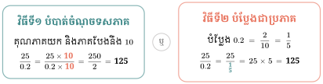
គណនាផលចែក
- ក. \(\displaystyle \frac{\sqrt{7}}{\sqrt{28}}\)
- ខ. \(\displaystyle \frac{\sqrt[3]{5}}{\sqrt[3]{0.2}}\)
- គ. \(\displaystyle \frac{\sqrt{10}}{\sqrt{1000}}\)
- ឃ. \(\displaystyle \frac{\sqrt[3]{100}}{\sqrt[3]{0.1}}\)
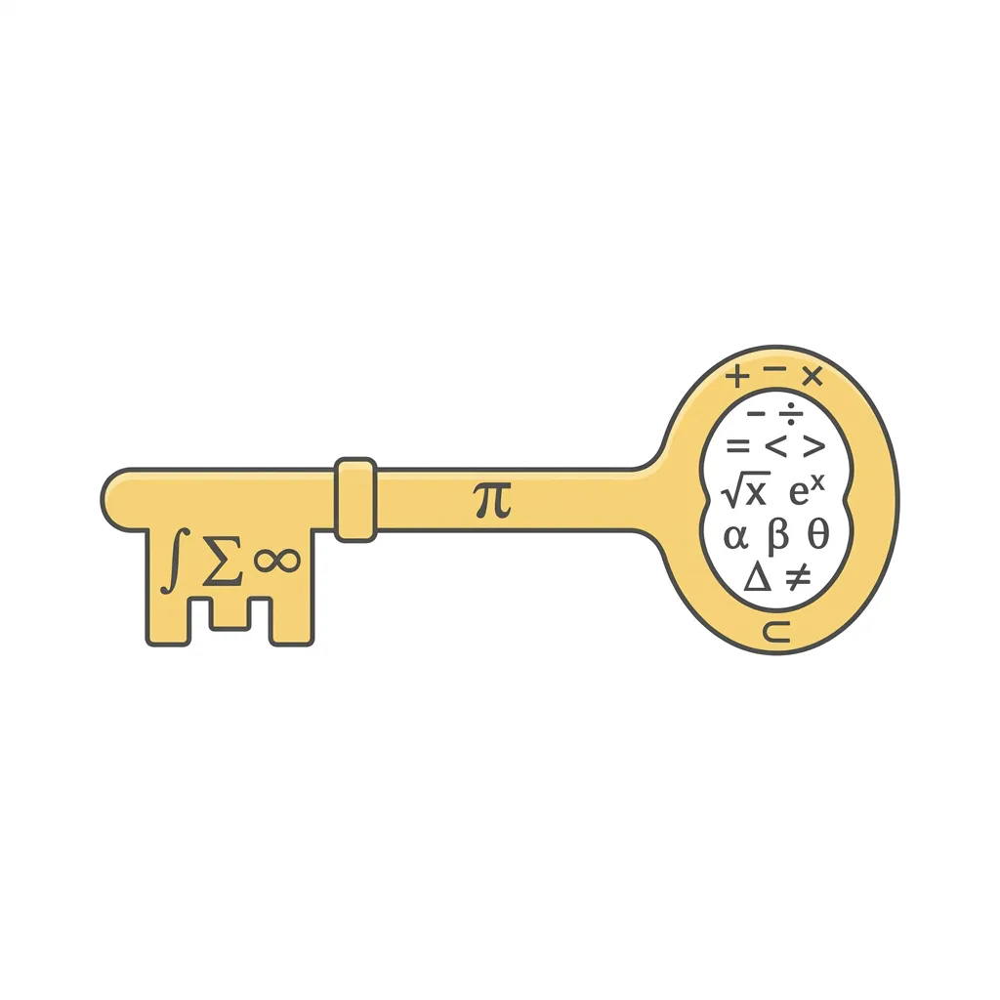
ចំណេះដឹងមូលដ្ឋានគ្រឹះ ចំនួនបឋម និង ការបំបែកជាកត្តា (Prime Factorization)
មុននឹងរៀនពីរបៀបបញ្ចេញលេខពីរ៉ាឌីកាល់ ប្អូនៗត្រូវស្គាល់សិនថាអ្វីទៅជា ចំនួនបឋម (Prime Numbers)!
ចំនួនបឋម គឺជាចំនួនគត់ធំជាង 1 ដែលចែកដាច់នឹង 1 និងខ្លួនវាប៉ុណ្ណោះ។
ចំនួនបឋមពី 1 ដល់ 100 មាន 25 លេខគឺ
2, 3, 5, 7, 11, 13, 17, 19, 23, 29, 31, 37, 41, 43, 47, 53, 59, 61, 67, 71, 73, 79, 83, 89, 97
ការបំបែកជាកត្តាបឋម
បើយើងមានលេខធំមួយ ដូចជា \(\displaystyle 72\) យើងអាចបំបែកវាជាផលគុណនៃចំនួនបឋម ដោយប្រើវិធីចែកបន្តបន្ទាប់ (និយមប្រើនៅកម្ពុជា) ឬដ្យាក្រាមមែកធាង
១. វិធីចែកបន្តបន្ទាប់
| \(\displaystyle 72\) | \(\displaystyle \textcolor{#2c6464}{\mathbf{2}}\) |
| \(\displaystyle 36\) | \(\displaystyle \textcolor{#2c6464}{\mathbf{2}}\) |
| \(\displaystyle 18\) | \(\displaystyle \textcolor{#2c6464}{\mathbf{2}}\) |
| \(\displaystyle 9\) | \(\displaystyle \textcolor{#2c6464}{\mathbf{3}}\) |
| \(\displaystyle 3\) | \(\displaystyle \textcolor{#2c6464}{\mathbf{3}}\) |
| \(\displaystyle 1\) |
២. ដ្យាក្រាមមែកធាង (Factor Tree)
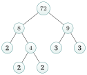
តាមរយៈវិធីទាំងពីរ យើងទាញបានកត្តាបឋមដូចគ្នា
\(\displaystyle 72 = 2 \times 2 \times 2 \times 3 \times 3 = \mathbf{2^3 \times 3^2}\)។
ជំនាញនេះសំខាន់ណាស់នៅពេលប្អូនៗត្រូវគណនា \(\displaystyle \sqrt{72}\) ព្រោះវាជួយឱ្យយើងឃើញគូនៃចំនួនយ៉ាងច្បាស់!
៣.៣. ការបញ្ចេញមួយចំនួនពីរ៉ាឌីកាល់
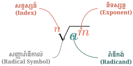
ងាយយល់ ការបញ្ចេញមួយចំនួនពីរ៉ាឌីកាល់ គឺប្រៀបដូចជាការរកវិធី "រំដោះ" លេខចេញពីក្នុងរ៉ាឌីកាល់អញ្ចឹង! ដើម្បីអាចចេញរួច លេខនោះត្រូវតែមានស្វ័យគុណស្មើនឹងសន្ទស្សន៍រ៉ាឌីកាល់។ បើឫសការេ ត្រូវការស្វ័យគុណ២។ បើឫសគូប ត្រូវការស្វ័យគុណ៣។
របៀបគិតជាជំហានៗ
ជំហានទី ១ បំបែកជាកត្តាបឋម \(\displaystyle \sqrt{72}\): \(\displaystyle 72 = 2^3 \times 3^2\)
ជំហានទី ២ រកគូនៃកត្តា \(\displaystyle 72 = \underbrace{2^2}_{\text{\tiny group}} \times 2 \times \underbrace{3^2}_{\text{\tiny group}}\)
ជំហានទី ៣ បញ្ចេញចេញ
\(\displaystyle \sqrt{72} = \sqrt{2^2 \times 3^2 \times 2} = 2 \times 3 \times \sqrt{2} = 6\sqrt{2}\)
ឧទាហរណ៍ទី១៤ ចូរបញ្ចេញមួយចំនួនពីរ៉ាឌីកាល់ ក. \(\displaystyle \sqrt{18}\), ខ. \(\displaystyle \sqrt{72}\), គ. \(\displaystyle \sqrt{200x^3} \quad (x>0)\)
គិតមុនគូ ប្អូនៗសង្កេតឃើញទេថា លេខនៅក្នុងឫសទាំងនេះមិនមែនជាការេប្រាកដទាំងអស់ទេ។ ដើម្បីបញ្ចេញវាបាន វិធីសាស្ត្ររបស់យើងគឺត្រូវព្យាយាមបំបែកលេខនោះជាផលគុណនៃ "លេខការេប្រាកដ" គុណនឹង "លេខដែលនៅសល់"។ តោះសាកល្បងមើលទាំងអស់គ្នា!
ជំហានទី១៖ បញ្ចេញ \(\displaystyle \sqrt{18}\) ដំបូង យើងសួរខ្លួនឯងថា តើមានលេខការេប្រាកដណាដែលចែកដាច់នឹង 18 ទេ? អូ! 18 អាចបំបែកជា \(\displaystyle 9 \times 2\) ដែលលេខ 9 នេះហើយជាការេប្រាកដ (\(\displaystyle 3^2\))។
ហេតុនេះយើងបាន \(\displaystyle \sqrt{18} = \sqrt{9 \times 2} = \sqrt{3^2 \times 2} = 3\sqrt{2}\)។
ជំហានទី២៖ បញ្ចេញ \(\displaystyle \sqrt{72}\) ចុះចំណែកលេខធំដូចជា 72 វិញ? យើងអាចបំបែកវាជា \(\displaystyle 36 \times 2\) ព្រោះលេខ 36 គឺជាការេប្រាកដ (\(\displaystyle 6^2\)) ដែលធំបំផុតអាចចែកដាច់នឹង 72។
ហេតុនេះយើងបាន \(\displaystyle \sqrt{72} = \sqrt{36 \times 2} = \sqrt{6^2 \times 2} = 6\sqrt{2}\)។
ជំហានទី៣៖ បញ្ចេញ \(\displaystyle \sqrt{200x^3}\) ឥឡូវយើងមានអថេរចូលរួមផងដែរ! កុំបារម្ភអី យើងគ្រាន់តែបំបែកទាំងមេគុណ និងអថេរដាច់ពីគ្នា។ លេខ \(\displaystyle 200 = 100 \times 2\) (យក 100 ព្រោះជាការេ) រីឯ \(\displaystyle x^3 = x^2 \times x\) (យក \(\displaystyle x^2\) ព្រោះជាការេ)។
ហេតុនេះយើងបាន \(\displaystyle \sqrt{200x^3} = \sqrt{100 \cdot x^2 \cdot 2 \cdot x} = \sqrt{(10x)^2 \cdot 2x} = 10x\sqrt{2x}\) (ព្រោះគេប្រាប់ស្រាប់ថា \(\displaystyle x>0\))។
ដូចនេះ យើងទទួលបានលទ្ធផល \(\displaystyle \boxed{\sqrt{18} = 3\sqrt{2}}\) \(\displaystyle \boxed{\sqrt{72} = 6\sqrt{2}}\) \(\displaystyle \boxed{\sqrt{200x^3} = 10x\sqrt{2x}}\)
ឧទាហរណ៍ទី១៥ ក. រក \(\displaystyle x\) បើ \(\displaystyle x^2 = 9\)
ខ. រក \(\displaystyle x\) បើ \(\displaystyle x^3 = 8\)
គិតមុនគូ ឧទាហរណ៍នេះបង្ហាញពីទំនាក់ទំនងរវាងការដោះស្រាយសមីការ និងការបញ្ចេញលេខពីរ៉ាឌីកាល់។
ជំហានទី១ ដោះស្រាយករណីឫសការេ \(\displaystyle x^2 = 9\) តាមរូបមន្ត \(\displaystyle x = \sqrt{9}\) ឬ \(\displaystyle x = -\sqrt{9}\)។ ដោយ \(\displaystyle 3^2 = 9\) នោះ \(\displaystyle \sqrt{9} = \sqrt{3^2} = 3\)។ យើងទាញបាន \(\displaystyle \sqrt{9} = 3\) និង \(\displaystyle -\sqrt{9} = -3\)។ នេះបញ្ជាក់ថា \(\displaystyle \sqrt{3^2} = 3\) (បញ្ចេញ 9 ពីរ៉ាឌីកាល់)។
ជំហានទី២ ដោះស្រាយករណីឫសគូប \(\displaystyle x^3 = 8\) តាមរូបមន្ត \(\displaystyle x = \sqrt[3]{8}\)។ ដោយ \(\displaystyle 2^3 = 8\) នោះ \(\displaystyle \sqrt[3]{8} = \sqrt[3]{2^3} = 2\)។ នេះបញ្ជាក់ថា \(\displaystyle \sqrt[3]{2^3} = 2\) (បញ្ចេញ 8 ពីរ៉ាឌីកាល់)។
ដូចនេះ ការដោះស្រាយសមីការជួយបញ្ជាក់យ៉ាងច្បាស់ពីលក្ខណៈនៃការបញ្ចេញលេខពីរ៉ាឌីកាល់។
ដើម្បីបញ្ចេញមួយចំនួនពីរ៉ាឌីកាល់ គេត្រូវបំបែកវាជាស្វ័យគុណដែលមាននិទស្សន្តស្មើនឹងសន្ទស្សន៍នៃរ៉ាឌីកាល់។
ករណីរ៉ាឌីកង់ជាចំនួនអថេរ
ដោយ \(\displaystyle \sqrt{5^2} = 5\) , \(\displaystyle \sqrt{(-5)^2} = 5\) ដូចនេះ \(\displaystyle \sqrt{x^2} = |x|\) ជាចំនួនវិជ្ជមាន។
បើ \(\displaystyle x \ge 0\) នោះ \(\displaystyle \sqrt{x^2} = x\) , បើ \(\displaystyle x \le 0\) , \(\displaystyle \sqrt{x^2} = -x\)។
ដោយ \(\displaystyle \sqrt[3]{5^3} = 5\) , \(\displaystyle \sqrt[3]{(-5)^3} = -5\) ដូចនេះ \(\displaystyle \sqrt[3]{x^3} = x\) ។
ឧទាហរណ៍ទី១៦ បញ្ចេញមួយចំនួនពីរ៉ាឌីកាល់
- ក. \(\displaystyle \sqrt{121}\)
- ខ. \(\displaystyle \sqrt{\frac{4}{9}}\)
- គ. \(\displaystyle \sqrt[3]{125}\)
- ឃ. \(\displaystyle \sqrt{16 \times 81}\)
- ង. \(\displaystyle \sqrt[3]{-27}\)
- ច. \(\displaystyle \sqrt[3]{\frac{2}{2000}}\)
គិតមុនគូ ចំនួនទាំងអស់នេះអាចសរសេរជាទម្រង់ស្វ័យគុណបាន ដែលអាចបញ្ចេញពីរ៉ាឌីកាល់អស់តែម្តងដោយគ្មានសល់លេខខាងក្នុង។
ជំហានដោះស្រាយ
- ក. \(\displaystyle \sqrt{121} = \sqrt{11^2} = 11\)
- ខ. \(\displaystyle \sqrt{\frac{4}{9}} = \sqrt{\left(\frac{2}{3}\right)^2} = \frac{2}{3}\)
- គ. \(\displaystyle \sqrt[3]{125} = \sqrt[3]{5^3} = 5\)
- ឃ. \(\displaystyle \sqrt{16 \times 81} = \sqrt{(4 \times 9)^2} = 36\)
- ង. \(\displaystyle \sqrt[3]{-27} = -\sqrt[3]{27} = -\sqrt[3]{3^3} = -3\)
- ច. \(\displaystyle \sqrt[3]{\frac{2}{2000}} = \sqrt[3]{\frac{1}{1000}} = \sqrt[3]{\left(\frac{1}{10}\right)^3} = \frac{1}{10}\)
ដូចនេះ លេខទាំងអស់ត្រូវបានបញ្ចេញពីរ៉ាឌីកាល់បានយ៉ាងងាយ។
ឧទាហរណ៍ទី១៧ បញ្ចេញចំនួន \(\displaystyle \sqrt{32}\) និង \(\displaystyle \sqrt[3]{16}\) ពីរ៉ាឌីកាល់។
គិតមុនគូ យើងបំបែកវាជាផលគុណដោយប្រើលក្ខណៈវិធីគុណរ៉ាឌីកាល់ ដែលយើងធ្លាប់រៀន។
ជំហានទី១ បញ្ចេញ \(\displaystyle \sqrt{32}\) យើងដឹងថា \(\displaystyle 32 = 16 \times 2\) ដែល \(\displaystyle 16 = 4^2\)។ \(\displaystyle \sqrt{32} = \sqrt{16 \times 2} = \sqrt{16} \times \sqrt{2} = \sqrt{4^2} \times \sqrt{2} = 4\sqrt{2}\)
ជំហានទី២ បញ្ចេញ \(\displaystyle \sqrt[3]{16}\) ចំពោះឫសគូប យើងត្រូវរកគូបប្រាកដ។ \(\displaystyle 16 = 8 \times 2\) ដែល \(\displaystyle 8 = 2^3\)។ \(\displaystyle \sqrt[3]{16} = \sqrt[3]{8 \times 2} = \sqrt[3]{8} \times \sqrt[3]{2} = \sqrt[3]{2^3} \times \sqrt[3]{2} = 2\sqrt[3]{2}\)
ដូចនេះ \(\displaystyle \boxed{\sqrt{32} = 4\sqrt{2}}\) និង \(\displaystyle \boxed{\sqrt[3]{16} = 2\sqrt[3]{2}}\)
បញ្ចេញមួយចំនួនពីរ៉ាឌីកាល់
- ក. \(\displaystyle \sqrt{\frac{2}{8}}\)
- ខ. \(\displaystyle \sqrt{\frac{81}{3}}\)
- គ. \(\displaystyle \sqrt{12}\)
- ឃ. \(\displaystyle \sqrt[3]{81}\)
- ង. \(\displaystyle \sqrt{50}\)
- ច. \(\displaystyle \sqrt{\frac{2}{25}}\)
៣.៤. ការបញ្ចូលមួយចំនួនក្នុងរ៉ាឌីកាល់
ងាយយល់ ការបញ្ចូលមួយចំនួនទៅក្នុងរ៉ាឌីកាល់ ជាវិធីច្រាសនៃការបញ្ចេញមួយចំនួនពីរ៉ាឌីកាល់។ មុននឹងបញ្ចូលលេខចូលទៅក្នុងរ៉ាឌីកាល់ ត្រូវបំពាក់ស្វ័យគុណឱ្យវាជាមុនសិន!
ឧទាហរណ៍ទី១៨ ក. បញ្ចូល 4 ទៅក្នុងរ៉ាឌីកាល់នៃ \(\displaystyle 4\sqrt{2}\)
ខ. បញ្ចូល 3 ទៅក្នុងរ៉ាឌីកាល់នៃ \(\displaystyle 3\sqrt[3]{2}\)
គិតមុនគូ មុននឹងបញ្ជូនលេខចូលក្នុងរ៉ាឌីកាល់ ត្រូវបំពាក់ស្វ័យគុណឲ្យវាសិន។ បើឫសការេ បំពាក់ស្វ័យគុណ២។ បើឫសគូប បំពាក់ស្វ័យគុណ៣។
ជំហានទី១ បញ្ចូល \(\displaystyle 4\sqrt{2}\) លេខ 4 បញ្ចូលក្នុងឫសការេត្រូវបំពាក់ស្វ័យគុណ២ ក្លាយជា \(\displaystyle 4^2 = 16\)។
\(\displaystyle 4\sqrt{2} = \sqrt{4^2} \times \sqrt{2} = \sqrt{16 \times 2} = \sqrt{32}\)
ជំហានទី២ បញ្ចូល \(\displaystyle 3\sqrt[3]{2}\) លេខ 3 បញ្ចូលក្នុងឫសគូបត្រូវបំពាក់ស្វ័យគុណ៣ ក្លាយជា \(\displaystyle 3^3 = 27\)។
\(\displaystyle 3\sqrt[3]{2} = \sqrt[3]{3^3} \times \sqrt[3]{2} = \sqrt[3]{27 \times 2} = \sqrt[3]{54}\)
ដូចនេះ \(\displaystyle \boxed{4\sqrt{2} = \sqrt{32}}\) និង \(\displaystyle \boxed{3\sqrt[3]{2} = \sqrt[3]{54}}\)
ដើម្បីបញ្ចូលមួយចំនួនទៅក្នុងរ៉ាឌីកាល់ គេត្រូវលើកចំនួននោះជាស្វ័យគុណដោយឱ្យនិទស្សន្តនៃស្វ័យគុណស្មើនឹងសន្ទស្សន៍នៃរ៉ាឌីកាល់។
ឧទាហរណ៍ទី១៩ បញ្ចូលមួយចំនួនក្នុងរ៉ាឌីកាល់
- ក. \(\displaystyle \frac{2}{3}\sqrt{\frac{12}{5}}\)
- ខ. \(\displaystyle 5\sqrt{\frac{3}{50}}\)
- គ. \(\displaystyle -7\sqrt{5}\)
- ឃ. \(\displaystyle -5\sqrt[3]{\frac{4}{25}}\)
- ង. \(\displaystyle 2\sqrt[3]{\frac{5}{12}}\)
- ច. \(\displaystyle \frac{1}{2}\sqrt[3]{4}\)
គិតមុនគូ លេខវិជ្ជមាន អាចបញ្ចូលក្នុងរ៉ាឌីកាល់បានធម្មតា ដោយគ្រាន់តែបំពាក់ស្វ័យគុណ។ ចំពោះលេខអវិជ្ជមាន បើឫសការេ យើងរក្សាទុកសញ្ញាដកនៅខាងក្រៅ។ បើឫសគូប យើងអាចបញ្ចូលសញ្ញាដកទៅខាងក្នុងបាន។
ជំហានដោះស្រាយ
- ក. \(\displaystyle \frac{2}{3}\sqrt{\frac{12}{5}} = \sqrt{\left(\frac{2}{3}\right)^2 \times \frac{12}{5}} = \sqrt{\frac{4}{9} \times \frac{12}{5}} = \sqrt{\frac{48}{45}} = \sqrt{\frac{16}{15}}\)
- ខ. \(\displaystyle 5\sqrt{\frac{3}{50}} = \sqrt{5^2 \times \frac{3}{50}} = \sqrt{25 \times \frac{3}{50}} = \sqrt{\frac{3}{2}}\)
- គ. \(\displaystyle -7\sqrt{5} = -\sqrt{7^2 \times 5} = -\sqrt{49 \times 5} = -\sqrt{245}\) (រក្សាសញ្ញាដកនៅក្រៅ ព្រោះជាឫសការេ)
- ឃ. \(\displaystyle -5\sqrt[3]{\frac{4}{25}} = \sqrt[3]{(-5)^3 \times \frac{4}{25}} = \sqrt[3]{-125 \times \frac{4}{25}} = \sqrt[3]{-20} = -\sqrt[3]{20}\)
- ង. \(\displaystyle 2\sqrt[3]{\frac{5}{12}} = \sqrt[3]{2^3 \times \frac{5}{12}} = \sqrt[3]{8 \times \frac{5}{12}} = \sqrt[3]{\frac{40}{12}} = \sqrt[3]{\frac{10}{3}}\)
- ច. \(\displaystyle \frac{1}{2}\sqrt[3]{4} = \sqrt[3]{\left(\frac{1}{2}\right)^3 \times 4} = \sqrt[3]{\frac{1}{8} \times 4} = \sqrt[3]{\frac{4}{8}} = \sqrt[3]{\frac{1}{2}}\)
ដូចនេះ រាល់ពេលបញ្ចូលលេខចូលរ៉ាឌីកាល់ កុំភ្លេចបំពាក់ស្វ័យគុណឲ្យវាស្មើនឹងសន្ទស្សន៍!
បញ្ចូលមួយចំនួនក្នុងរ៉ាឌីកាល់
- ក. \(\displaystyle \sqrt[3]{\frac{1}{3}}\)
- ខ. \(\displaystyle \frac{1}{3}\sqrt{3}\)
- គ. \(\displaystyle 5\sqrt[3]{\frac{2}{25}}\)
- ឃ. \(\displaystyle \frac{2}{11}\sqrt{\frac{121}{7}}\)
៣.៥. វិធីបូកនិងវិធីដករ៉ាឌីកាល់
ងាយយល់ ការបូកដករ៉ាឌីកាល់ គឺដូចគ្នាបេះបិទទៅនឹងការបូកដកអក្សរ (ឯកធា) ដែរ។ ឧទាហរណ៍ \(\displaystyle 3x + 4x = 7x\)។ ដូចគ្នាដែរ \(\displaystyle 3\sqrt{2} + 4\sqrt{2} = 7\sqrt{2}\)។ ចំណុចសំខាន់គឺ យើងអាចបូកដកបានតែរ៉ាឌីកាល់ដែលមាន "រ៉ាឌីកង់" (លេខខាងក្នុង) និង "សន្ទស្សន៍" ដូចគ្នាប៉ុណ្ណោះ!
ឧទាហរណ៍ទី២០ គណនា
- ក. \(\displaystyle 2\sqrt{3} + 5\sqrt{3}\)
- ខ. \(\displaystyle 5\sqrt{2} - 3\sqrt{2} + \sqrt{2}\)
- គ. \(\displaystyle 3\sqrt{2} + \sqrt{8}\)
- ឃ. \(\displaystyle \sqrt{12} + \sqrt{27} - \sqrt{3}\)
គិតមុនគូ យើងអាចបូកដកបានតែរ៉ាឌីកាល់ដែលមានរ៉ាឌីកង់ (លេខក្នុងឫស) ដូចគ្នាប៉ុណ្ណោះ។ បើវាខុសគ្នា ត្រូវព្យាយាមបញ្ចេញពីរ៉ាឌីកាល់សិន។
ជំហានទី១ (កម្រិតងាយ) រ៉ាឌីកង់ដូចគ្នាស្រាប់
- ក. \(\displaystyle 2\sqrt{3} + 5\sqrt{3} = (2 + 5)\sqrt{3} = 7\sqrt{3}\)
- ខ. \(\displaystyle 5\sqrt{2} - 3\sqrt{2} + \sqrt{2} = (5 - 3 + 1)\sqrt{2} = 3\sqrt{2}\)
ជំហានទី២ (កម្រិតមធ្យម) ត្រូវបញ្ចេញលេខខ្លះសិន
- គ. \(\displaystyle 3\sqrt{2} + \sqrt{8}\) (ដោយ \(\displaystyle \sqrt{8} = \sqrt{4 \times 2} = 2\sqrt{2}\))
\(\displaystyle = 3\sqrt{2} + 2\sqrt{2} = 5\sqrt{2}\)
ជំហានទី៣ (កម្រិតពិបាក) ត្រូវបញ្ចេញគ្រប់តួ
- ឃ. \(\displaystyle \sqrt{12} + \sqrt{27} - \sqrt{3}\)
(ដោយ \(\displaystyle \sqrt{12} = 2\sqrt{3}\) និង \(\displaystyle \sqrt{27} = 3\sqrt{3}\))
\(\displaystyle = 2\sqrt{3} + 3\sqrt{3} - 1\sqrt{3} = (2 + 3 - 1)\sqrt{3} = 4\sqrt{3}\)
ដូចនេះ ការបូកដករ៉ាឌីកាល់គឺដូចការបូកដកឯកធា \(\displaystyle x\) ដែរ ឱ្យតែរ៉ាឌីកង់វាដូចគ្នា!
ពន្យល់ពិសេស សម្គាល់ \(\displaystyle \sqrt{3} + \sqrt{7}\) មានរ៉ាឌីកង់ខុសគ្នាមិនអាចបូកបានទេ! ក្នុងករណីមានរ៉ាឌីកង់ខុសគ្នា គេត្រូវព្យាយាមបំប្លែង (បញ្ចេញពីរ៉ាឌីកាល់) ឱ្យមានរ៉ាឌីកង់ដូចគ្នាសិន។
✗ \(\displaystyle 3\sqrt{2} + 4\sqrt{3} = 7\sqrt{5}\)
✓ រ៉ាឌីកង់ខុសគ្នា មិនអាចបូកដកបានទេ។ \(\displaystyle 3\sqrt{2} + 4\sqrt{3}\) ជាចម្លើយចុងក្រោយ។
ដើម្បីគណនាផលបូកនិងផលដករ៉ាឌីកាល់ដែលមានសន្ទស្សន៍ដូចគ្នា គេត្រូវបំប្លែងរ៉ាឌីកង់ឱ្យដូចគ្នា។
ដើម្បីគណនាផលបូកនិងផលដករ៉ាឌីកាល់ដែលមានរ៉ាឌីកង់ដូចគ្នានិងសន្ទស្សន៍ដូចគ្នា គេបូក-ដកមេគុណនិងមេគុណ ហើយរ៉ាឌីកាល់ទុកដដែល។
ឧទាហរណ៍ទី២១ គណនាកន្សោមខាងក្រោម
- \(\displaystyle A = 3\sqrt{11} + 5\sqrt{44} - 3\sqrt{99}\)
- \(\displaystyle B = 3\sqrt{18} - \sqrt{12} + \sqrt{75} + \sqrt{2}\)
- \(\displaystyle C = 3\sqrt[3]{24} + 6\sqrt[3]{81}\)
- \(\displaystyle D = 6\sqrt[3]{8x^2} - 2\sqrt[3]{27x^2}\)
- \(\displaystyle E = \sqrt{20} + \sqrt{80} - \sqrt{45}\)
- \(\displaystyle F = 14\sqrt{3} + 6\sqrt{2} - 11\sqrt{3}\)
គិតមុនគូ យើងបំបែករ៉ាឌីកង់នីមួយៗឱ្យចេញជាការេប្រាកដ ឬគូបប្រាកដ រួចបញ្ចេញវាមកក្រៅដើម្បីរក្សាតែផ្នែកដែលបូកដកគ្នាបាន។
ជំហានដោះស្រាយ
- \(\displaystyle A\) \(\displaystyle = 3\sqrt{11} + 5\sqrt{4 \times 11} - 3\sqrt{9 \times 11} = 3\sqrt{11} + 10\sqrt{11} - 9\sqrt{11} = 4\sqrt{11}\)
- \(\displaystyle B\) \(\displaystyle = 3\sqrt{9 \times 2} - \sqrt{4 \times 3} + \sqrt{25 \times 3} + \sqrt{2} = 9\sqrt{2} - 2\sqrt{3} + 5\sqrt{3} + \sqrt{2} = 10\sqrt{2} + 3\sqrt{3}\)
- \(\displaystyle C\) \(\displaystyle = 3\sqrt[3]{8 \times 3} + 6\sqrt[3]{27 \times 3} = 6\sqrt[3]{3} + 18\sqrt[3]{3} = 24\sqrt[3]{3}\)
- \(\displaystyle D\) \(\displaystyle = 12\sqrt[3]{x^2} - 6\sqrt[3]{x^2} = 6\sqrt[3]{x^2}\)
- \(\displaystyle E\) \(\displaystyle = \sqrt{4 \times 5} + \sqrt{16 \times 5} - \sqrt{9 \times 5} = 2\sqrt{5} + 4\sqrt{5} - 3\sqrt{5} = 3\sqrt{5}\)
- \(\displaystyle F\) \(\displaystyle = 14\sqrt{3} + 6\sqrt{2} - 11\sqrt{3} = (14-11)\sqrt{3} + 6\sqrt{2} = 3\sqrt{3} + 6\sqrt{2}\)
ដូចនេះ បើមានរ៉ាឌីកង់ណាដែលខុសគេ យើងគ្រាន់តែទុកវានៅដដែល (ដូចករណី B និង F)។
ឧទាហរណ៍ទី២២ សម្រួលកន្សោមដែលមានអថេរខាងក្រោម (ដោយសន្មតថាអថេរទាំងអស់វិជ្ជមាន)
- \(\displaystyle A = \sqrt{128y} - \sqrt{2y}\)
- \(\displaystyle B = 5\sqrt{18x} + 2\sqrt{8x}\)
- \(\displaystyle C = \sqrt{8n + 8} + \sqrt{2n + 2}\)
- \(\displaystyle D = \sqrt{200k^2} - \sqrt{98k^2}\)
- \(\displaystyle E = \sqrt{8x^2} + \sqrt{2x^2}\)
- \(\displaystyle F = 2\sqrt{45x^3} - \sqrt{20x^3}\)
គិតមុនគូ វិធីដោះស្រាយគឺដូចគ្នាទាំងស្រុងទៅនឹងលេខសុទ្ធដែរ។ យើងបំបែកទាំងលេខ ទាំងអថេរ ដើម្បីបញ្ចេញពីរ៉ាឌីកាល់។
ជំហានដោះស្រាយ
- \(\displaystyle A\) \(\displaystyle = \sqrt{64 \times 2y} - \sqrt{2y} = 8\sqrt{2y} - \sqrt{2y} = 7\sqrt{2y}\)
- \(\displaystyle B\) \(\displaystyle = 5\sqrt{9 \times 2x} + 2\sqrt{4 \times 2x} = 15\sqrt{2x} + 4\sqrt{2x} = 19\sqrt{2x}\)
- \(\displaystyle C\) \(\displaystyle = \sqrt{4(2n + 2)} + \sqrt{2n + 2} = 2\sqrt{2n + 2} + \sqrt{2n + 2} = 3\sqrt{2n + 2}\)
- \(\displaystyle D\) \(\displaystyle = \sqrt{100 \times 2k^2} - \sqrt{49 \times 2k^2} = 10k\sqrt{2} - 7k\sqrt{2} = 3k\sqrt{2}\)
- \(\displaystyle E\) \(\displaystyle = \sqrt{4 \times 2x^2} + \sqrt{2x^2} = 2x\sqrt{2} + x\sqrt{2} = 3x\sqrt{2}\)
- \(\displaystyle F\) \(\displaystyle = 2\sqrt{9 \times 5x^3} - \sqrt{4 \times 5x^3} = 6x\sqrt{5x} - 2x\sqrt{5x} = 4x\sqrt{5x}\)
ដូចនេះ ទោះមានអក្សរក៏ដោយ លក្ខណៈនៃការបូកដកនៅតែរក្សាដដែល។
សម្រួល
- ក. \(\displaystyle 5\sqrt{50} - 8\sqrt{32}\)
- ខ. \(\displaystyle \sqrt{48x} - \sqrt{27x}\)
- គ. \(\displaystyle \sqrt{5P} + 3\sqrt{45P^3} \; (P > 0)\)
- ឃ. \(\displaystyle \sqrt{12x + 12} + \sqrt{27x + 27}\)
- ង. \(\displaystyle \sqrt{72a} - 3\sqrt{98a}\)
ហេតអ្វីត្រូវបំបាត់?
\(\displaystyle \frac{3}{\sqrt{2}} \approx ?\) ពិបាកគណនា!
\(\displaystyle \frac{3\sqrt{2}}{2} = 1.5 \times 1.414... \approx 2.12\) ងាយគណនា!
វិធី \(\displaystyle \frac{3}{\sqrt{2}} \times \frac{\sqrt{2}}{\sqrt{2}} = \frac{3\sqrt{2}}{2}\)
៣.៦. វិធីបំបាត់រ៉ាឌីកាល់ពីភាគបែង
ងាយយល់ ជាទូទៅគេមិនទុកឱ្យចំនួនដែលមានរ៉ាឌីកាល់នៅភាគបែងទេ។ ហេតុអ្វី? ពីព្រោះវាធ្វើឱ្យយើងពិបាកក្នុងការគណនា និងពិបាកស្គាល់មេគុណរបស់វា។ ដើម្បីបំបាត់វា យើងត្រូវគុណទាំងភាគយកនិងភាគបែង ជាមួយនឹងកន្សោមណាមួយដែលធ្វើឱ្យភាគបែងលែងមានរ៉ាឌីកាល់។
ករណីភាគបែងមានមួយតួ (ឫសការេ)
ជាទូទៅ ដើម្បីបំបាត់រ៉ាឌីកាល់ពីភាគបែងដែលមានមួយតួនិងសន្ទស្សន៍ពីរ គេត្រូវគុណទាំងភាគយកនិងភាគបែង នឹងរ៉ាឌីកាល់នៃភាគបែងនោះ។
\(\displaystyle \frac{a}{\sqrt{b}} = \frac{a \times \sqrt{b}}{\sqrt{b} \times \sqrt{b}} = \frac{a\sqrt{b}}{b} \quad (b > 0)\)
ករណីភាគបែងមានមួយតួ (ឫសគូប)
ជាទូទៅ ដើម្បីបំបាត់រ៉ាឌីកាល់ពីភាគបែងដែលមានមួយតួនិងសន្ទស្សន៍បី (ឫសគូប) គេត្រូវគុណទាំងភាគយកនិងភាគបែង នឹង រ៉ាឌីកាល់បំពេញ នៃភាគបែងនោះ។
\(\displaystyle \frac{a}{\sqrt[3]{b}} = \frac{a \times \sqrt[3]{b^2}}{\sqrt[3]{b} \times \sqrt[3]{b^2}} = \frac{a\sqrt[3]{b^2}}{b}\) \(\displaystyle \frac{a}{\sqrt[3]{b^2}} = \frac{a \times \sqrt[3]{b}}{\sqrt[3]{b^2} \times \sqrt[3]{b}} = \frac{a\sqrt[3]{b}}{b} \quad (b \neq 0)\)
ឧទាហរណ៍ទី២៣ វិធីបំបាត់រ៉ាឌីកាល់ពីភាគបែងដែលមានមួយតួ
គិតមុនគូ ប្អូនៗឃើញទេថា ភាគបែងនៅទីនេះសុទ្ធតែមានជាប់រ៉ាឌីកាល់។ គោលដៅរបស់យើង គឺត្រូវរកវិធីបំបាត់វាចោល។ វិធីដែលល្អបំផុតគឺ "គុណបំពេញ" ដើម្បីឱ្យរ៉ាឌីកង់ខាងក្នុងក្លាយជាស្វ័យគុណ ដែលអាចបញ្ចេញពីរ៉ាឌីកាល់បាន!
ជំហានទី១៖ ករណីឫសការេ (សន្ទស្សន៍ ២)
យើងត្រូវគុណទាំងភាគយកនិងភាគបែង នឹងរ៉ាឌីកាល់ខ្លួនវា ដើម្បីបង្កើតបានជាស្វ័យគុណការេ រួចទម្លាក់រ៉ាឌីកាល់ចោលយ៉ាងងាយស្រួល។
- ក. \(\displaystyle \frac{3}{\sqrt{2}} = \frac{3 \times \sqrt{2}}{\sqrt{2} \times \sqrt{2}} = \frac{3\sqrt{2}}{\sqrt{2^2}} = \frac{3\sqrt{2}}{2}\)
- ខ. \(\displaystyle \frac{5}{2\sqrt{3}}\) នៅទីនេះយើងគុណតែនឹង \(\displaystyle \sqrt{3}\) គឺគ្រប់គ្រាន់ហើយ មិនចាំបាច់គុណលេខ \(\displaystyle 2\) នាំឱ្យលេខធំទេ!
\(\displaystyle \frac{5}{2\sqrt{3}} = \frac{5 \times \sqrt{3}}{2\sqrt{3} \times \sqrt{3}} = \frac{5\sqrt{3}}{2 \times (\sqrt{3})^2} = \frac{5\sqrt{3}}{2 \times 3} = \frac{5\sqrt{3}}{6}\)
ជំហានទី២៖ ករណីឫសគូប (សន្ទស្សន៍ ៣)
ប្រយ័ត្នណា! សម្រាប់ឫសគូប យើងមិនអាចគ្រាន់តែគុណខ្លួនវាបានទេ! យើងត្រូវស្វែងរក រ៉ាឌីកាល់បំពេញ ធ្វើយ៉ាងណាឱ្យបានជាស្វ័យគុណគូប (\(\displaystyle ^3\)) សិនទើបអាចទម្លាក់បាន។
- គ. \(\displaystyle \frac{2}{\sqrt[3]{5}}\) ភាគបែងគឺ \(\displaystyle \sqrt[3]{5}\) ដែលមានស្វ័យគុណ \(\displaystyle 1\)។ ដើម្បីបានជាគូបពេញលេញ ត្រូវគុណនឹងរ៉ាឌីកាល់បំពេញ \(\displaystyle \sqrt[3]{5^2}\)។
\(\displaystyle \frac{2}{\sqrt[3]{5}} = \frac{2 \times \sqrt[3]{5^2}}{\sqrt[3]{5} \times \sqrt[3]{5^2}} = \frac{2\sqrt[3]{25}}{\sqrt[3]{5^3}} = \frac{2\sqrt[3]{25}}{5}\) - ឃ. \(\displaystyle \frac{7}{\sqrt[3]{2^2}}\) ភាគបែងគឺ \(\displaystyle \sqrt[3]{2^2}\)។ វាខ្វះតែមួយតួទៀតទេនឹងគ្រប់គូប ដូច្នេះត្រូវគុណនឹងរ៉ាឌីកាល់បំពេញ \(\displaystyle \sqrt[3]{2^1}\)។
\(\displaystyle \frac{7}{\sqrt[3]{2^2}} = \frac{7 \times \sqrt[3]{2}}{\sqrt[3]{2^2} \times \sqrt[3]{2}} = \frac{7\sqrt[3]{2}}{\sqrt[3]{2^3}} = \frac{7\sqrt[3]{2}}{2}\) - ង. \(\displaystyle \frac{\sqrt[3]{3}}{\sqrt[3]{4}}\) ភាគបែងគឺ \(\displaystyle \sqrt[3]{4}\) ដែលយើងអាចសរសេរជា \(\displaystyle \sqrt[3]{2^2}\) បាន។ ដូច្នេះរ៉ាឌីកាល់បំពេញគឺ \(\displaystyle \sqrt[3]{2}\) ដដែល។
\(\displaystyle \frac{\sqrt[3]{3}}{\sqrt[3]{4}} = \frac{\sqrt[3]{3} \times \sqrt[3]{2}}{\sqrt[3]{4} \times \sqrt[3]{2}} = \frac{\sqrt[3]{6}}{\sqrt[3]{8}} = \frac{\sqrt[3]{6}}{\sqrt[3]{2^3}} = \frac{\sqrt[3]{6}}{2}\)
ដូចនេះ ការគុណទាំងភាគយកនិងភាគបែងនឹងតម្លៃដូចគ្នា មិនធ្វើឱ្យប្រភាគប្រែប្រួលតម្លៃទេ ហើយអាចបំបាត់រ៉ាឌីកាល់បានយ៉ាងមានប្រសិទ្ធភាព!
បំបាត់រ៉ាឌីកាល់ពីភាគបែងនៃកន្សោមខាងក្រោម
- ក. \(\displaystyle \frac{7}{\sqrt{5}}\)
- ខ. \(\displaystyle \frac{2}{3\sqrt{7}}\)
- គ. \(\displaystyle \frac{4}{\sqrt[3]{2}}\)
វិធីងាយ
នៅពេលភាគបែងមានឫសការេពីរតួ គេត្រូវគុណនឹង កន្សោមឆ្លាស់ ដើម្បីប្រើរូបមន្ត
នៅពេលភាគបែងមានឫសគូបពីរតួ គេត្រូវគុណនឹង កន្សោមបំពេញ ដើម្បីប្រើរូបមន្ត
ចំណាំ
- \(\displaystyle a^2 + ab + b^2\) ជាកន្សោមបំពេញនៃ \(\displaystyle a - b\)
- \(\displaystyle a^2 - ab + b^2\) ជាកន្សោមបំពេញនៃ \(\displaystyle a + b\)
ករណីភាគបែងមាន ២ តួ
ជាទូទៅ ដើម្បីបំបាត់រ៉ាឌីកាល់ពីភាគបែងដែលមាន ២ តួ
- ករណីភាគបែងមាន ២ តួ (ឫសការេ) គេត្រូវគុណទាំងភាគយក និងភាគបែង នឹង កន្សោមឆ្លាស់ នៃភាគបែងនោះ។
\(\displaystyle \frac{A}{\sqrt{a} - \sqrt{b}} = \frac{A(\sqrt{a} + \sqrt{b})}{(\sqrt{a} - \sqrt{b})(\sqrt{a} + \sqrt{b})} = \frac{A(\sqrt{a} + \sqrt{b})}{(\sqrt{a})^2 - (\sqrt{b})^2} = \frac{A(\sqrt{a} + \sqrt{b})}{a - b}\)
\(\displaystyle \frac{A}{\sqrt{a} + \sqrt{b}} = \frac{A(\sqrt{a} - \sqrt{b})}{(\sqrt{a} + \sqrt{b})(\sqrt{a} - \sqrt{b})} = \frac{A(\sqrt{a} - \sqrt{b})}{(\sqrt{a})^2 - (\sqrt{b})^2} = \frac{A(\sqrt{a} - \sqrt{b})}{a - b}\)
- ករណីភាគបែងមាន ២ តួ (ឫសគូប) គេត្រូវគុណទាំងភាគយក និងភាគបែង នឹង កន្សោមបំពេញ នៃភាគបែងនោះ។
\(\displaystyle \frac{A}{\sqrt[3]{a} - \sqrt[3]{b}} = \frac{A(\sqrt[3]{a^2} + \sqrt[3]{ab} + \sqrt[3]{b^2})}{(\sqrt[3]{a} - \sqrt[3]{b})(\sqrt[3]{a^2} + \sqrt[3]{ab} + \sqrt[3]{b^2})} = \frac{A(\sqrt[3]{a^2} + \sqrt[3]{ab} + \sqrt[3]{b^2})}{a - b}\)
\(\displaystyle \frac{A}{\sqrt[3]{a} + \sqrt[3]{b}} = \frac{A(\sqrt[3]{a^2} - \sqrt[3]{ab} + \sqrt[3]{b^2})}{(\sqrt[3]{a} + \sqrt[3]{b})(\sqrt[3]{a^2} - \sqrt[3]{ab} + \sqrt[3]{b^2})} = \frac{A(\sqrt[3]{a^2} - \sqrt[3]{ab} + \sqrt[3]{b^2})}{a + b}\)
ឧទាហរណ៍ទី២៤ ចូរបំបាត់រ៉ាឌីកាល់ពីភាគបែងនៃ \(\displaystyle \frac{2}{\sqrt{7} - 2}\) និង \(\displaystyle \frac{\sqrt{2}}{\sqrt{5} + \sqrt{2}}\)។
គិតមុនគូ នេះជាចំណុចពិសេសមួយ! នៅពេលភាគបែងមានតួពីរ (មានសញ្ញាបូក ឬដកនៅកណ្តាល) បើយើងគុណតែ \(\displaystyle \sqrt{7}\) វាអត់បាត់រ៉ាឌីកាល់ទេ។ ដើម្បីបំបាត់វាឱ្យស្រឡះ យើងត្រូវតែគុណនឹង "កន្សោមឆ្លាស់" របស់វា ដើម្បីបង្កើតជាសមភាពដ៏ល្បីល្បាញ \(\displaystyle (a-b)(a+b) = a^2 - b^2\)!
ជំហានទី១៖ បំបាត់រ៉ាឌីកាល់ \(\displaystyle \frac{2}{\sqrt{7} - 2}\) ដំបូង យើងត្រូវរកកន្សោមឆ្លាស់នៃ \(\displaystyle (\sqrt{7} - 2)\) សិន។ កន្សោមឆ្លាស់របស់វាគឺត្រូវប្តូរសញ្ញាដកទៅជាបូក គឺ \(\displaystyle (\sqrt{7} + 2)\)។
បន្ទាប់មក យើងគុណទាំងភាគយកនិងភាគបែងនឹង \(\displaystyle (\sqrt{7} + 2)\) ៖
\(\displaystyle \frac{2}{\sqrt{7} - 2} = \frac{2(\sqrt{7} + 2)}{(\sqrt{7} - 2)(\sqrt{7} + 2)} = \frac{2(\sqrt{7} + 2)}{(\sqrt{7})^2 - 2^2} = \frac{2(\sqrt{7} + 2)}{7 - 4} = \frac{2(\sqrt{7} + 2)}{3}\)
ជំហានទី២៖ បំបាត់រ៉ាឌីកាល់ \(\displaystyle \frac{\sqrt{2}}{\sqrt{5} + \sqrt{2}}\) ដូចគ្នាដែរ កន្សោមឆ្លាស់នៃ \(\displaystyle (\sqrt{5} + \sqrt{2})\) គឺត្រូវប្តូរសញ្ញាបូកទៅជាដក គឺ \(\displaystyle (\sqrt{5} - \sqrt{2})\)។
យើងអនុវត្តវិធីដូចខាងលើ ៖
\(\displaystyle \frac{\sqrt{2}}{\sqrt{5} + \sqrt{2}} = \frac{\sqrt{2}(\sqrt{5} - \sqrt{2})}{(\sqrt{5} + \sqrt{2})(\sqrt{5} - \sqrt{2})} = \frac{\sqrt{10} - \sqrt{4}}{(\sqrt{5})^2 - (\sqrt{2})^2} = \frac{\sqrt{10} - 2}{5 - 2} = \frac{\sqrt{10} - 2}{3}\)
ដូចនេះ ប្អូនៗឃើញទេ សម្រាប់ភាគបែងដែលមានឫសការេពីរតួ ការជ្រើសរើសប្រើកន្សោមឆ្លាស់ គឺជា "អាវុធ" ដ៏អស្ចារ្យបំផុតជួយបំបាត់រ៉ាឌីកាល់បានយ៉ាងស្អាត!
សិស្សភាគច្រើនតែងតែច្រឡំថា បើភាគបែងមានតួបូកគ្នា ឧទាហរណ៍ \(\displaystyle (\sqrt{a} + \sqrt{b})\) គេគ្រាន់តែគុណនឹងខ្លួនវា ឬលើកវាជាការេ \(\displaystyle (\sqrt{a} + \sqrt{b})^2\) ដើម្បីបំបាត់រ៉ាឌីកាល់។
នេះជាការយល់ខុស! ព្រោះ \(\displaystyle (\sqrt{a} + \sqrt{b})^2 = a + 2\sqrt{ab} + b\) ដែលនៅតែមានរ៉ាឌីកាល់ \(\displaystyle 2\sqrt{ab}\) ដដែល។
ដើម្បីបំបាត់រ៉ាឌីកាល់បានទាំងស្រុង យើងដាច់ខាតត្រូវគុណនឹង កន្សោមឆ្លាស់ \(\displaystyle (\sqrt{a} - \sqrt{b})\) ដើម្បីចូលរូបមន្តផលដកការេ
\(\displaystyle (\sqrt{a} + \sqrt{b})(\sqrt{a} - \sqrt{b}) = (\sqrt{a})^2 - (\sqrt{b})^2 = a - b\)
ដែលនេះទើបជាវិធីបំបាត់រ៉ាឌីកាល់ពិតប្រាកដ។
ពាក្យពេចន៍ពីគ្រូ
ការបំបាត់រ៉ាឌីកាល់ពីភាគបែង គឺដូចជាការ "ដោះមីន" អញ្ចឹង! យើងត្រូវដឹងថាភាគបែងមានរូបរាងបែបណា ទើបអាចជ្រើសរើស "អាវុធ" មកដោះស្រាយបានត្រឹមត្រូវ។
ដើម្បីឱ្យប្អូនៗងាយយល់ និងចេះធ្វើដោយខ្លួនឯង លោកគ្រូនឹងបែងចែកលំហាត់ជា ៣ កម្រិត ពីងាយទៅពិបាក រួមជាមួយនឹងការពន្យល់មួយជំហានម្តងៗ។ តោះ សិក្សាទាំងអស់គ្នា!
ឧទាហរណ៍ទី២៥ (កម្រិតទី១ - ងាយ) បំបាត់ឫសការេដែលមានតួពីរ
នៅកម្រិតនេះ យើងជួបភាគបែងដែលមានឫសការេបូកឬដកគ្នា។
អាវុធត្រូវប្រើ កន្សោមឆ្លាស់ \(\displaystyle (a-b)(a+b) = a^2 - b^2\)
លំហាត់ A \(\displaystyle \frac{\sqrt{3} + \sqrt{2}}{\sqrt{3} - \sqrt{2}}\)
- ជំហានទី១ ពិនិត្យមើលភាគបែងគឺ \(\displaystyle \sqrt{3} - \sqrt{2}\) (មានរាង \(\displaystyle a-b\))។ ដូចនេះយើងត្រូវគុណទាំងភាគយកនិងភាគបែងនឹងកន្សោមឆ្លាស់របស់វាគឺ \(\displaystyle \sqrt{3} + \sqrt{2}\) (រាង \(\displaystyle a+b\))។
- ជំហានទី២ គុណចូលគ្នា
\(\displaystyle A = \frac{(\sqrt{3} + \sqrt{2})(\sqrt{3} + \sqrt{2})}{(\sqrt{3} - \sqrt{2})(\sqrt{3} + \sqrt{2})} = \frac{(\sqrt{3} + \sqrt{2})^2}{(\sqrt{3})^2 - (\sqrt{2})^2}\) - ជំហានទី៣ គណនាភាគបែង វាក្លាយជា \(\displaystyle 3 - 2 = 1\)។ ចំណែកភាគយក \(\displaystyle (\sqrt{3} + \sqrt{2})^2 = 3 + 2\sqrt{6} + 2 = 5 + 2\sqrt{6}\)។
- ដូចនេះ \(\displaystyle A = \frac{5 + 2\sqrt{6}}{1} = 5 + 2\sqrt{6}\)។
ឧទាហរណ៍ទី២៦ (កម្រិតទី២ - មធ្យម) សម្រួលរ៉ាឌីកាល់សិនមុននឹងគុណ
ជួនកាល លេខក្នុងរ៉ាឌីកាល់ធំៗពេក។ បើយើងប្រញាប់គុណកន្សោមឆ្លាស់យកតែម្តង លេខនឹងកាន់តែធំ ហើយពិបាកគណនាខ្លាំងណាស់!
លំហាត់ B \(\displaystyle \frac{8\sqrt{2}}{\sqrt{20} - \sqrt{18}}\)
- ជំហានទី១ (សម្រួលសិន) ភាគបែងមាន \(\displaystyle \sqrt{20} = 2\sqrt{5}\) និង \(\displaystyle \sqrt{18} = 3\sqrt{2}\)។
ភាគបែងថ្មីគឺ \(\displaystyle 2\sqrt{5} - 3\sqrt{2}\) ឃើញថាលេខតូចជាងមុនមែនទេ? - ជំហានទី២ (គុណកន្សោមឆ្លាស់) ភាគបែងជាសញ្ញាដក ដូច្នេះយើងគុណនឹង \(\displaystyle 2\sqrt{5} + 3\sqrt{2}\)។
\(\displaystyle B = \frac{8\sqrt{2}(2\sqrt{5} + 3\sqrt{2})}{(2\sqrt{5} - 3\sqrt{2})(2\sqrt{5} + 3\sqrt{2})} = \frac{16\sqrt{10} + 24\sqrt{4}}{(2\sqrt{5})^2 - (3\sqrt{2})^2}\) - ជំហានទី៣ (គណនាភាគបែង) \(\displaystyle (2\sqrt{5})^2 = 4 \times 5 = 20\) និង \(\displaystyle (3\sqrt{2})^2 = 9 \times 2 = 18\)។ ភាគបែងគឺ \(\displaystyle 20 - 18 = 2\)។
- ជំហានទី៤ (សម្រួលចម្លើយ) \(\displaystyle B = \frac{16\sqrt{10} + 48}{2} = \frac{2(8\sqrt{10} + 24)}{2} = 8\sqrt{10} + 24\)។
- ចំណាំ ឃើញទេ? បើយើងចេះសម្រួលសិន លេខនឹងងាយស្រួលគណនាជាងមុនច្រើន!
ឧទាហរណ៍ទី២៧ (កម្រិតទី៣ - កម្រិតប្រឡង) បំបាត់ឫសគូបដែលមានតួពីរ
នេះជាចំណុចដែលសិស្សភាគច្រើនតែងតែខ្លាច! នៅពេលភាគបែងមាន ឫសគូប យើងដាច់ខាតមិនអាចប្រើកន្សោមឆ្លាស់ \(\displaystyle (a-b)(a+b)\) ដូចមុនបានទេ ព្រោះវានឹងចេញត្រឹមការេ \(\displaystyle a^2-b^2\) ដែលមិនអាចបំបាត់ឫសគូបបានឡើយ។ យើងត្រូវប្រើ កន្សោមបំពេញ ដើម្បីឱ្យវាចេញជាស្វ័យគុណបី \(\displaystyle a^3 \pm b^3\)។
អាវុធត្រូវប្រើ \(\displaystyle (a-b)(a^2 + ab + b^2) = a^3 - b^3\) ឬ \(\displaystyle (a+b)(a^2 - ab + b^2) = a^3 + b^3\)
លំហាត់ C \(\displaystyle \frac{1}{\sqrt[3]{2} - 1}\) (ឧទាហរណ៍នាំមុខ)
- កំណត់តួ ភាគបែងមានរាង \(\displaystyle a-b\) ដែល \(\displaystyle a = \sqrt[3]{2}\) និង \(\displaystyle b = 1\)។
- រកកន្សោមបំពេញ ត្រូវប្រើ \(\displaystyle a^2 + ab + b^2\)
គឺ \(\displaystyle (\sqrt[3]{2})^2 + (\sqrt[3]{2})(1) + 1^2 = \sqrt[3]{4} + \sqrt[3]{2} + 1\)។ - ប្រតិបត្តិការគុណ យើងគុណវាទៅទាំងភាគយកនិងភាគបែង
\(\displaystyle C = \frac{1 \times (\sqrt[3]{4} + \sqrt[3]{2} + 1)}{(\sqrt[3]{2} - 1)(\sqrt[3]{4} + \sqrt[3]{2} + 1)} = \frac{\sqrt[3]{4} + \sqrt[3]{2} + 1}{(\sqrt[3]{2})^3 - 1^3} = \frac{\sqrt[3]{4} + \sqrt[3]{2} + 1}{2 - 1} = \sqrt[3]{4} + \sqrt[3]{2} + 1\)
លំហាត់ D \(\displaystyle \frac{3}{\sqrt[3]{5} - \sqrt[3]{2}}\) (កម្រិតពិបាក)
- កំណត់តួ មានរាង \(\displaystyle a-b\) ដូចគ្នា ដែល \(\displaystyle a = \sqrt[3]{5}\) និង \(\displaystyle b = \sqrt[3]{2}\)។
- រកកន្សោមបំពេញ ត្រូវប្រើ \(\displaystyle a^2 + ab + b^2\)
គឺ \(\displaystyle (\sqrt[3]{5})^2 + \sqrt[3]{5}\sqrt[3]{2} + (\sqrt[3]{2})^2 = \sqrt[3]{25} + \sqrt[3]{10} + \sqrt[3]{4}\)។ - ប្រតិបត្តិការគុណ
\(\displaystyle D = \frac{3(\sqrt[3]{25} + \sqrt[3]{10} + \sqrt[3]{4})}{(\sqrt[3]{5} - \sqrt[3]{2})(\sqrt[3]{25} + \sqrt[3]{10} + \sqrt[3]{4})} = \frac{3(\sqrt[3]{25} + \sqrt[3]{10} + \sqrt[3]{4})}{(\sqrt[3]{5})^3 - (\sqrt[3]{2})^3} = \frac{3(\sqrt[3]{25} + \sqrt[3]{10} + \sqrt[3]{4})}{5 - 2}\) - ចម្លើយចុងក្រោយ ដោយសារភាគបែង \(\displaystyle 5 - 2 = 3\) នោះវាអាចសម្រួលជាមួយមេគុណ ៣ នៅភាគយកបានយ៉ាងស្អាត។
\(\displaystyle D = \sqrt[3]{25} + \sqrt[3]{10} + \sqrt[3]{4}\)
ដូចនេះ បើទោះជាកន្សោមមើលទៅស្មុគស្មាញ ក៏ដោយ បើយើងចេះជ្រើសរើសរូបមន្តឱ្យត្រូវនឹងប្រភេទឫស កន្សោមឆ្លាស់សម្រាប់ឫសការេ និងកន្សោមបំពេញសម្រាប់ឫសគូប យើងអាចបំបាត់រ៉ាឌីកាល់ពីភាគបែងបានត្រឹមត្រូវ។
សម្រួល
- ក. \(\displaystyle \frac{1}{\sqrt{5} + \sqrt{2}}\)
- ខ. \(\displaystyle \frac{3\sqrt{2} + 2\sqrt{3}}{\sqrt{12} - \sqrt{18}}\)
- គ. \(\displaystyle \frac{3}{\sqrt[3]{5} - \sqrt[3]{4}}\)
- ឃ. \(\displaystyle \frac{\sqrt[3]{3}}{\sqrt[3]{4} + \sqrt[3]{2}}\)
ពាក្យពេចន៍ពីគ្រូ
តោះ! ដល់ម៉ោងអនុវត្តសាកល្បងសមត្ថភាពហើយ។ កុំបារម្ភអី ប្អូនៗគ្រាន់តែធ្វើមួយៗតាមលំដាប់លំដោយពីងាយទៅពិបាកណា៎! បើមានចំណុចណាមិនយល់ អាចអាន "គន្លឹះ" ដែលមានផ្តល់ជូននៅក្បែរលំហាត់ ឬត្រលប់ទៅមើលឧទាហរណ៍ខាងលើវិញបានជានិច្ច!
កម្រិតទី១៖ ចាប់ផ្តើម
- ១.១
ចូរគណនា
- ក. \(\displaystyle \sqrt{9}\)
- ខ. \(\displaystyle \sqrt{16}\)
- គ. \(\displaystyle \sqrt{36}\)
- ឃ. \(\displaystyle -\sqrt{64}\)
- ង. \(\displaystyle -\sqrt{100}\)
- ច. \(\displaystyle \sqrt{121}\)
- ឆ. \(\displaystyle -\sqrt{144}\)
- ជ. \(\displaystyle \sqrt{625}\)
- ឈ. \(\displaystyle \sqrt[3]{8}\)
- ញ. \(\displaystyle \sqrt[3]{-8}\)
- ដ. \(\displaystyle -\sqrt[3]{27}\)
- ឋ. \(\displaystyle -\sqrt[3]{64}\)
- ឌ. \(\displaystyle \sqrt[3]{125}\)
- ឍ. \(\displaystyle \sqrt[3]{216}\)
- ណ. \(\displaystyle \sqrt[3]{100}\)
- ១.២
ចូរគណនា
- ក. \(\displaystyle \sqrt{\frac{9}{16}}\)
- ខ. \(\displaystyle \sqrt{\frac{49}{9}}\)
- គ. \(\displaystyle -\sqrt{\frac{81}{4}}\)
- ឃ. \(\displaystyle \sqrt{\frac{169}{49}}\)
- ង. \(\displaystyle \sqrt{\frac{196}{25}}\)
- ច. \(\displaystyle -\sqrt{\frac{400}{225}}\)
- ឆ. \(\displaystyle \sqrt[3]{\frac{1}{8}}\)
- ជ. \(\displaystyle \sqrt[3]{\frac{8}{27}}\)
- ឈ. \(\displaystyle \sqrt[3]{\frac{64}{125}}\)
- ញ. \(\displaystyle \sqrt[3]{\frac{512}{343}}\)
- ដ. \(\displaystyle \sqrt[3]{-\frac{216}{1000}}\)
- ១.៣
ចូរសម្រួលរ៉ាឌីកាល់
- ក. \(\displaystyle \sqrt{16^3}\)
- ខ. \(\displaystyle -\sqrt[3]{36^2}\)
- គ. \(\displaystyle \sqrt{64^3}\)
- ឃ. \(\displaystyle (\sqrt[3]{-8})^3\)
- ង. \(\displaystyle \sqrt[3]{-27^3}\)
- ច. \(\displaystyle \sqrt[3]{1^5}\)
- ឆ. \(\displaystyle \sqrt[3]{8^2}\)
- ជ. \(\displaystyle \sqrt[3]{64^2}\)
- ឈ. \(\displaystyle \sqrt[3]{(-27)^2}\)
កម្រិតទី២៖ អនុវត្ត
- ១.៤
ចូរសម្រួលរ៉ាឌីកាល់
- ក. \(\displaystyle \sqrt{y^2}\)
- ខ. \(\displaystyle \sqrt{x^4}\)
- គ. \(\displaystyle \sqrt{x^2y^4}\)
- ឃ. \(\displaystyle -\sqrt{y^6}\)
- ង. \(\displaystyle \sqrt{\frac{16}{x^2}}\)
- ច. \(\displaystyle \sqrt{\frac{100}{n^4}}\)
- ឆ. \(\displaystyle \sqrt[3]{8x^3}\)
- ជ. \(\displaystyle -\sqrt{64m^3}\)
- ១.៥
ចូរសម្រួលកន្សោម
- ក. \(\displaystyle \sqrt{(2x)^2}\)
- ខ. \(\displaystyle \sqrt[3]{(-5y)^3}\)
- គ. \(\displaystyle \sqrt{(4 - a)^2}\)
- ឃ. \(\displaystyle \sqrt[3]{(x + 3)^3}\)
- ង. \(\displaystyle \sqrt{16b^2 + 24b + 9}\)
- ច. \(\displaystyle \sqrt{9x^2 - 30x + 25}\)
- ឆ. \(\displaystyle \sqrt{4m^2 - 20mn + 25n^2}\)
- ជ. \(\displaystyle \sqrt{49x^2 - 112xy + 64y^2}\)
★គន្លឹះ គន្លឹះ បើជួបកន្សោមត្រីធា ត្រូវប្រើរូបមន្ត \(\displaystyle (a\pm b)^2 = a^2 \pm 2ab + b^2\) សិន ដើម្បីបញ្ចូលវាជាការេ ទើបអាចបញ្ចេញពីរ៉ាឌីកាល់បាន។
- ១.៦
ចូរបញ្ចេញមួយចំនួនពីរ៉ាឌីកាល់
- ក. \(\displaystyle \sqrt{18}\)
- ខ. \(\displaystyle \sqrt{48}\)
- គ. \(\displaystyle \sqrt{75}\)
- ឃ. \(\displaystyle \sqrt{\frac{30}{49}}\)
- ង. \(\displaystyle \sqrt{\frac{10}{121}}\)
- ច. \(\displaystyle \sqrt[3]{40}\)
- ឆ. \(\displaystyle \sqrt[3]{54}\)
- ជ. \(\displaystyle -\sqrt[3]{128}\)
- ឈ. \(\displaystyle \sqrt[3]{192}\)
- ញ. \(\displaystyle \sqrt[3]{\frac{3m}{8n^3}}\)
- ដ. \(\displaystyle \sqrt[3]{16a^5}\)
★គន្លឹះ គន្លឹះ ដើម្បីបញ្ចេញមួយចំនួនពីរ៉ាឌីកាល់ ត្រូវបំបែកវាជាផលគុណនៃកត្តាដែលជាការេប្រាកដ សម្រាប់ឫសការេ ឬគូបប្រាកដ សម្រាប់ឫសគូប។
ឧទាហរណ៍ \(\displaystyle \sqrt{18} = \sqrt{9 \times 2} = 3\sqrt{2}\) និង \(\displaystyle \sqrt[3]{40} = \sqrt[3]{8 \times 5} = 2\sqrt[3]{5}\) ។ - ១.៧
ចូរបញ្ចេញមួយចំនួនពីរ៉ាឌីកាល់
- ក. \(\displaystyle \sqrt{36a^2b^3}\)
- ខ. \(\displaystyle \sqrt{27a^4b^3}\)
- គ. \(\displaystyle \sqrt{72x^5y^2}\)
- ឃ. \(\displaystyle -\sqrt{112a^3b^4}\)
- ង. \(\displaystyle \sqrt{80m^4n^3}\)
- ច. \(\displaystyle \sqrt[3]{64x^2y^3}\)
- ឆ. \(\displaystyle \sqrt[3]{16m^3n^3}\)
- ជ. \(\displaystyle \sqrt[3]{-54x^4b^3}\)
- ឈ. \(\displaystyle -\sqrt[3]{128a^5y^3}\)
- ញ. \(\displaystyle \sqrt[3]{24p^3q^5}\)
- ១.៨
ចូរបញ្ចូលមួយចំនួនក្នុងរ៉ាឌីកាល់ \(\displaystyle x\) , \(\displaystyle y\) , \(\displaystyle m\) , \(\displaystyle n\) និង \(\displaystyle p\) ជាចំនួនវិជ្ជមាន ។
- ក. \(\displaystyle 5\sqrt{6}\)
- ខ. \(\displaystyle 2m\sqrt{m}\)
- គ. \(\displaystyle \frac{\sqrt{23}}{y^3}\)
- ឃ. \(\displaystyle 2\sqrt[3]{5}\)
- ង. \(\displaystyle 2x\sqrt[3]{4}\)
- ច. \(\displaystyle \frac{\sqrt[3]{3m}}{2n}\)
- ១.៩
ចូរគណនា
- ក. \(\displaystyle 3\sqrt{2} - 4\sqrt{2} + 5\sqrt{2} - 3\sqrt{2}\)
- ខ. \(\displaystyle 5\sqrt{2} - 3\sqrt{3} - 6\sqrt{2} + 5\sqrt{3}\)
- គ. \(\displaystyle 3\sqrt{15} - 4\sqrt{3} - 3\sqrt{15} + 6\sqrt{3}\)
- ឃ. \(\displaystyle 4\sqrt{3} - 2\sqrt{17} + 3\sqrt{17} - 3\sqrt{3} - 2\sqrt{3}\)
- ង. \(\displaystyle 2\sqrt[3]{2} - 8\sqrt[3]{3} + \frac{3}{2}\sqrt[3]{2} + 3\sqrt[3]{3}\)
- ច. \(\displaystyle 8\sqrt[3]{2} - 3\sqrt[3]{3} - 5\sqrt[3]{2} + 2\sqrt[3]{3}\)
- ១.១០
ចូរគណនា
- ក. \(\displaystyle \frac{2}{3}\sqrt{27} - \frac{3}{4}\sqrt{48}\)
- ខ. \(\displaystyle \frac{1}{4}\sqrt{288} - \frac{1}{6}\sqrt{72}\)
- គ. \(\displaystyle \frac{3}{5}\sqrt{75} - \frac{2}{3}\sqrt{27}\)
- ឃ. \(\displaystyle 5\sqrt[3]{128} - 3\sqrt[3]{250}\)
- ង. \(\displaystyle 3\sqrt[3]{81} - \frac{1}{2}\sqrt[3]{192}\)
- ច. \(\displaystyle 4\sqrt[3]{54} - 3\sqrt[3]{128}\)
- ១.១១
ចូរគណនា
- ក. \(\displaystyle 2\sqrt{8} - 3\sqrt{98} - 2\sqrt{200}\)
- ខ. \(\displaystyle -3\sqrt{50} - \sqrt{32} + 5\sqrt{200}\)
- គ. \(\displaystyle 3\sqrt{175} - 2\sqrt{28} + 3\sqrt{63} - \sqrt{112}\)
- ឃ. \(\displaystyle \sqrt{108} - 2\sqrt{27} - \sqrt{40} - 5\sqrt{160}\)
- ង. \(\displaystyle 2\sqrt[3]{16} + 3\sqrt[3]{54} - 2\sqrt[3]{128}\)
- ច. \(\displaystyle 3\sqrt[3]{81} + \frac{1}{2}\sqrt[3]{128} - 3\sqrt[3]{192} + 4\sqrt[3]{54}\)
- ឆ. \(\displaystyle 4\sqrt[3]{54} - 6\sqrt[3]{81} - 4\sqrt[3]{16} + 3\sqrt[3]{24}\)
- ជ. \(\displaystyle -2\sqrt[3]{40} - 3\sqrt[3]{135} + 5\sqrt[3]{320} + 8\sqrt[3]{5}\)
★គន្លឹះ គន្លឹះ មុននឹងបូកដក ត្រូវសម្រួលរ៉ាឌីកាល់សិន ដោយបំបែកជាការេប្រាកដ ឬគូបប្រាកដ។ លេខដែលពិបាកបំបែកមានដូចជា
\(\displaystyle \bullet\ 98 = 49 \times 2 = 7^2 \times 2\)
\(\displaystyle \bullet\ 108 = 36 \times 3 = 6^2 \times 3\)
\(\displaystyle \bullet\ 112 = 16 \times 7 = 4^2 \times 7\)
\(\displaystyle \bullet\ 175 = 25 \times 7 = 5^2 \times 7\)
\(\displaystyle \bullet\ 128 = 64 \times 2 = 4^3 \times 2\) (គូប)
\(\displaystyle \bullet\ 192 = 64 \times 3 = 4^3 \times 3\) (គូប)
\(\displaystyle \bullet\ 320 = 64 \times 5 = 4^3 \times 5\) (គូប) - ១.១២
ចូរគណនា
- ក. \(\displaystyle -2(2\sqrt{12} - \sqrt{18}) - 5(3\sqrt{32} - \sqrt{27})\)
- ខ. \(\displaystyle 3(3\sqrt[3]{40} - \sqrt[3]{135}) + 4(\sqrt[3]{320} - \sqrt[3]{40})\)
- គ. \(\displaystyle \frac{2\sqrt{27}}{3} - 3\sqrt{48} + \frac{4\sqrt{50}}{5} - \frac{4\sqrt{18}}{3}\)
- ឃ. \(\displaystyle \frac{2}{3}\sqrt[3]{81} - \frac{1}{3}\sqrt[3]{24} + \frac{2\sqrt[3]{135}}{3} - \frac{3\sqrt[3]{40}}{2}\)
- ១.១៣
ចូរគណនាកន្សោមខាងក្រោម \(\displaystyle a\) , \(\displaystyle b\) , \(\displaystyle x\) , \(\displaystyle y\) និង \(\displaystyle z\) ជាចំនួនវិជ្ជមាន ។
- ក. \(\displaystyle A = -3\sqrt{32x} + 6\sqrt{8x}\)
- ខ. \(\displaystyle B = 2\sqrt{125x^2z} + 8x\sqrt{80z}\)
- គ. \(\displaystyle C = 7a\sqrt{b^3} + b\sqrt{4a^2b} - \sqrt{4b}\)
- ឃ. \(\displaystyle D = 8b\sqrt{49b} - 7\sqrt{9b^3} + a\sqrt{4a} + \sqrt{a^3}\)
- ង. \(\displaystyle E = 3xy\sqrt{x^2y} - 2\sqrt{x^4y^3}\)
- ច. \(\displaystyle F = -3a\sqrt{a^3b^5} - 2b\sqrt{a^5b^3} + 5\sqrt{a^5b^5}\)
- ឆ. \(\displaystyle G = 8a\sqrt[3]{54a} + 6\sqrt[3]{16a^4}\)
- ជ. \(\displaystyle H = 3\sqrt[3]{x^4y} - 6x\sqrt[3]{xy^4} + 2\sqrt[3]{x^4y^4}\)
- ១.១៤ ចូរគណនាតម្លៃលេខនៃកន្សោម \(\displaystyle A\) ចំពោះ \(\displaystyle a = 5\) , \(\displaystyle b = 3\)
\(\displaystyle A = \sqrt{ab} - \sqrt{ab^3} - \sqrt{9a^3b^3} - \sqrt{a^3b}\) ។ - ១.១៥ ចូរគណនាតម្លៃលេខនៃកន្សោម \(\displaystyle A = \sqrt{4a} + a\sqrt{a^2b} + \sqrt{b^2a} + b\sqrt{9b}\) ចំពោះ \(\displaystyle a = 3\) , \(\displaystyle b = 2\) ។
- ១.១៦
ចូរគណនា
- ក. \(\displaystyle (2\sqrt{3})(3\sqrt{2})\)
- ខ. \(\displaystyle (4\sqrt{6})(-2\sqrt{5})\)
- គ. \(\displaystyle (3\sqrt{5})(5\sqrt{3})\)
- ឃ. \(\displaystyle (6\sqrt{2})(-12\sqrt{3})\)
- ង. \(\displaystyle (3\sqrt{8})(-3\sqrt{48})\)
- ច. \(\displaystyle (-3\sqrt{75})(-2\sqrt{48})\)
- ឆ. \(\displaystyle (2\sqrt[3]{3})(-\frac{1}{2}\sqrt[3]{2})\)
- ជ. \(\displaystyle (3\sqrt[3]{2})(5\sqrt[3]{15})\)
- ឈ. \(\displaystyle (6\sqrt[3]{8})(-3\sqrt[3]{2})\)
- ១.១៧
ចូរគណនា
- ក. \(\displaystyle 3\sqrt{5}(2\sqrt{18} - 3\sqrt{48})\)
- ខ. \(\displaystyle -3\sqrt{3}(3\sqrt{6} - 3\sqrt{2})\)
- គ. \(\displaystyle \frac{1}{2}\sqrt{3}(2\sqrt{48} - 3\sqrt{32})\)
- ឃ. \(\displaystyle \frac{3}{2}\sqrt{2}(2\sqrt{18} - 3\sqrt{48})\)
- ង. \(\displaystyle -4\sqrt[3]{3}(2\sqrt[3]{6} - 2\sqrt[3]{5})\)
- ច. \(\displaystyle 2\sqrt[3]{5}(3\sqrt[3]{3} - 5\sqrt[3]{2})\)
- ឆ. \(\displaystyle 3\sqrt[3]{3}(3\sqrt[3]{8} - 2\sqrt[3]{18})\)
- ជ. \(\displaystyle -3\sqrt[3]{5}(4\sqrt[3]{20} - 2\sqrt[3]{45})\)
- ១.១៨
ចូរគណនា
- ក. \(\displaystyle (2\sqrt{3} - 8)(9 + 2\sqrt{5})\)
- ខ. \(\displaystyle (3\sqrt{5} - 2\sqrt{10})(\sqrt{50} - 2\sqrt{80})\)
- គ. \(\displaystyle (\sqrt{50} - \sqrt{75})(\sqrt{32} - \sqrt{48})\)
- ឃ. \(\displaystyle (\sqrt{125} - \sqrt{75})(\sqrt{80} - \sqrt{48})\)
- ង. \(\displaystyle (3\sqrt[3]{18} + 3\sqrt[3]{27})(2\sqrt[3]{8} - 2\sqrt[3]{12})\)
- ច. \(\displaystyle (\sqrt[3]{80} - 2\sqrt[3]{27})(-3\sqrt[3]{20} - 3\sqrt[3]{12})\)
★គន្លឹះ រូបមន្ត ប្រើលក្ខណៈបំបែក
\(\displaystyle (a+b)(c+d) =\)
\(\displaystyle ac + ad + bc + bd\) ។
កម្រិតទី៣៖ គិតបន្ថែម
- ១.១៩
គេឱ្យ \(\displaystyle a = 3\sqrt{5} - 2\sqrt{10}\) , \(\displaystyle b = 3\sqrt{5} + 2\sqrt{10}\) , \(\displaystyle c = \sqrt[3]{18} - \sqrt[3]{27}\) និង \(\displaystyle d = 3\sqrt[3]{6} + \sqrt[3]{8}\) ។
ចូរគណនា- ក. \(\displaystyle -3ab\)
- ខ. \(\displaystyle a^2 + b^2\)
- គ. \(\displaystyle a^2 - 2b^2\)
- ឃ. \(\displaystyle b^2 - 2ab\)
- ង. \(\displaystyle \frac{1}{2}cd\)
- ច. \(\displaystyle c^2 - b^2\)
- ឆ. \(\displaystyle c^2 + 2cd\)
★គន្លឹះ រូបមន្ត ប្រើរូបមន្តដើម្បីងាយស្រួលគណនា
\(\displaystyle (a\pm b)^2 = a^2 \pm 2ab + b^2\) ។ - ១.២០
ចូរគណនា
- ក. \(\displaystyle \frac{\sqrt{33}}{11}\)
- ខ. \(\displaystyle \frac{-\sqrt{48}}{\sqrt{27}}\)
- គ. \(\displaystyle 2\sqrt{75} \div \sqrt{15}\)
- ឃ. \(\displaystyle \frac{2\sqrt{84}}{-\sqrt{12}}\)
- ង. \(\displaystyle \frac{5\sqrt{25}}{\sqrt{75}} \div \sqrt{5}\)
- ច. \(\displaystyle \frac{12\sqrt[3]{6}}{\sqrt[3]{2}}\)
- ឆ. \(\displaystyle \frac{5\sqrt[3]{100}}{25\sqrt[3]{5}}\)
- ជ. \(\displaystyle \left(\frac{\sqrt[3]{72}}{2\sqrt[3]{8}}\right)\sqrt[3]{2}\)
- ឈ. \(\displaystyle \frac{6\sqrt[3]{7}}{3\sqrt[3]{6}} \div \frac{4\sqrt[3]{21}}{2\sqrt[3]{3}}\)
- ១.២១
ចូរសម្រួលកន្សោម
- ក. \(\displaystyle A = \sqrt{\frac{b^2}{b^2 - 14b + 49}}\)
- ខ. \(\displaystyle B = \sqrt{\frac{49x^2 - 56x + 16}{36x^2}}\)
- គ. \(\displaystyle C = \sqrt{\frac{a^2 + 16ab + 64b^2}{a^2 + 10ab + 25b^2}}\)
- ឃ. \(\displaystyle D = \sqrt{\frac{25b^2 + 10ab + a^2}{16b^2 + 24ab + 9a^2}}\)
- ១.២២
ចូរបំបាត់រ៉ាឌីកាល់ពីភាគបែង
- ក. \(\displaystyle \frac{3}{\sqrt{10}}\)
- ខ. \(\displaystyle \frac{3\sqrt{3}}{\sqrt{33}}\)
- គ. \(\displaystyle \frac{6}{\sqrt{48}}\)
- ឃ. \(\displaystyle \frac{8}{\sqrt{27}}\)
- ង. \(\displaystyle \frac{9\sqrt{4}}{\sqrt{18}}\)
- ច. \(\displaystyle \frac{5\sqrt{5}}{\sqrt{72}}\)
- ឆ. \(\displaystyle \frac{3\sqrt{9}}{\sqrt[3]{10}}\)
- ជ. \(\displaystyle \frac{2\sqrt[3]{3}}{\sqrt[3]{30}}\)
- ឈ. \(\displaystyle \frac{\sqrt[3]{18}}{\sqrt[3]{20}}\)
- ញ. \(\displaystyle \frac{\sqrt{7m}}{\sqrt[3]{36n}}\)
- ដ. \(\displaystyle \frac{\sqrt{11p}}{\sqrt[3]{49q}}\)
- ឋ. \(\displaystyle \sqrt[3]{\frac{3}{4y^2}}\)
★គន្លឹះ គន្លឹះ បើភាគបែងជា \(\displaystyle \sqrt{a}\) ត្រូវគុណនឹង \(\displaystyle \sqrt{a}\)។ បើជា \(\displaystyle \sqrt[3]{a}\) ត្រូវគុណនឹងរ៉ាឌីកាល់បំពេញ \(\displaystyle \sqrt[3]{a^2}\)។ សម្រួលរ៉ាឌីកាល់សិនបើអាច!
- ១.២៣
ចូរបំបាត់រ៉ាឌីកាល់ពីភាគបែង
- ក. \(\displaystyle \frac{36 - \sqrt{6}}{\sqrt{8}}\)
- ខ. \(\displaystyle \frac{\sqrt{3} + \sqrt{5}}{3\sqrt{20}}\)
- គ. \(\displaystyle \frac{8}{2\sqrt{75} - 3\sqrt{50}}\)
- ឃ. \(\displaystyle \frac{2\sqrt{3}}{2\sqrt{80} - \sqrt{45}}\)
- ង. \(\displaystyle \frac{9 - \sqrt[3]{3}}{2\sqrt[3]{32}}\)
- ច. \(\displaystyle \frac{5\sqrt[3]{4} + \sqrt[3]{3}}{8\sqrt[3]{13}}\)
- ឆ. \(\displaystyle \frac{2\sqrt[3]{6}}{2\sqrt[3]{27} - \sqrt[3]{9}}\)
- ជ. \(\displaystyle \frac{2\sqrt[3]{2}}{\sqrt[3]{16} - \sqrt[3]{12}}\)
★គន្លឹះ គន្លឹះ ចំពោះភាគបែងជាទ្វេធា ត្រូវគុណនឹង កន្សោមឆ្លាស់។ គួរសម្រួលរ៉ាឌីកាល់នៅភាគបែងជាមុនសិន។
- ១.២៤
ចូរបំបាត់រ៉ាឌីកាល់ពីភាគបែងដែលអថេរជាចំនួនវិជ្ជមាន
- ក. \(\displaystyle \frac{3}{\sqrt{x}}\)
- ខ. \(\displaystyle \frac{3a}{\sqrt{8ab}}\)
- គ. \(\displaystyle \frac{3\sqrt{x}}{5\sqrt{2x^3y}}\)
- ឃ. \(\displaystyle \frac{8a}{\sqrt[3]{25ab}}\)
- ង. \(\displaystyle \frac{27\sqrt[3]{m}}{7\sqrt[3]{m^2n}}\)
- ច. \(\displaystyle \frac{15}{\sqrt{2a} - \sqrt{b}}\)
- ឆ. \(\displaystyle \frac{7\sqrt{2x}}{2\sqrt{x} + \sqrt{3y}}\)
- ជ. \(\displaystyle \frac{\sqrt[3]{11}}{\sqrt[3]{2m} - \sqrt[3]{12n}}\)
- ឈ. \(\displaystyle \frac{7\sqrt[3]{7x}}{\sqrt[3]{x^2} + 2\sqrt[3]{y}}\)
- ១.២៥
គេឱ្យត្រីកោណកែងមួយមានវិមាត្រ \(\displaystyle a\) , \(\displaystyle b\) , \(\displaystyle c\) ដែល \(\displaystyle c\) ជាអ៊ីប៉ូតេនុស ។ ចូរគណនាជ្រុងមួយនៃត្រីកោណកែងនេះ បើគេដឹងថា
ក. \(\displaystyle a = 3\) , \(\displaystyle b = 4\) ខ. \(\displaystyle a = 5\) , \(\displaystyle b = 12\) គ. \(\displaystyle a = 6\) , \(\displaystyle b = 8\)
ឃ. \(\displaystyle c = 26\) , \(\displaystyle b = 10\) ង. \(\displaystyle b = 30\) , \(\displaystyle c = 50\) ។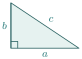
- ១.២៦
គេឱ្យ \(\displaystyle m = 3\sqrt{8} + \sqrt{5}\) និង \(\displaystyle n = 3\sqrt{8} - \sqrt{5}\) ។ ចូរគណនា \(\displaystyle \frac{mn + m^2}{m}\) , \(\displaystyle \frac{m^2 - n^2}{m + n}\) , \(\displaystyle \frac{n^2 - 2mn}{n^2}\) ។
★គន្លឹះ គន្លឹះ កុំអាលជំនួសលេខចូល! ត្រូវសម្រួលកន្សោមប្រភាគពិជគណិតជាមុនសិនទើបលឿន។
ឧ \(\displaystyle \frac{mn+m^2}{m} = n+m\) ។ - ១.២៧
ចូរប្រៀបធៀបចំនួន \(\displaystyle \sqrt{2}\) និង \(\displaystyle \sqrt[3]{3}\) ។
★គន្លឹះ គន្លឹះ ដើម្បីប្រៀបធៀប ត្រូវធ្វើឱ្យសន្ទស្សន៍ដូចគ្នាជាមុនសិន។ សាកល្បងលើកចំនួនទាំងពីរជាស្វ័យគុណទី ៦។
- ១.២៨
ចូរសម្រួលកន្សោម \(\displaystyle A = \sqrt{22 - \sqrt{288}}\) ។
★គន្លឹះ គន្លឹះ បំបែក \(\displaystyle \sqrt{288} = 2\sqrt{72}\) ។ បន្ទាប់មករកចំនួនពីរដែលបូកបញ្ចូលគ្នាស្មើ \(\displaystyle 22\) និងគុណគ្នាស្មើ \(\displaystyle 72\) ដើម្បីប្រើរូបមន្ត \(\displaystyle (a-b)^2 = a^2 - 2ab + b^2\) ។
- ១.២៩
ចូរគណនាកាំ \(\displaystyle r\) នៃស៊ីឡាំង បើមានមាឌស្មើនឹង \(\displaystyle 628 \ 000 \text{ cm}^3\) គេឱ្យ \(\displaystyle \pi = 3.14\) ។
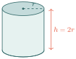
- ១.៣០
ក. ចូរបង្ហាញថា \(\displaystyle 2^{17} + 2^{17} = 2^{18}\)
ខ. ចូរកំណត់ \(\displaystyle x\) ដែល \(\displaystyle 2^x \cdot 2^{x+3} = 8^5\) ។★គន្លឹះ គន្លឹះ (ក) ប្រើលក្ខណៈ \(\displaystyle a + a = 2a\) ។ (ខ) បំបែក \(\displaystyle 8 = 2^3\) រួចប្រើរូបមន្ត \(\displaystyle a^m \cdot a^n = a^{m+n}\) ។
លំហាត់វាយតម្លៃសមត្ថភាព PISA
ផ្សារទិញការ៉ូ
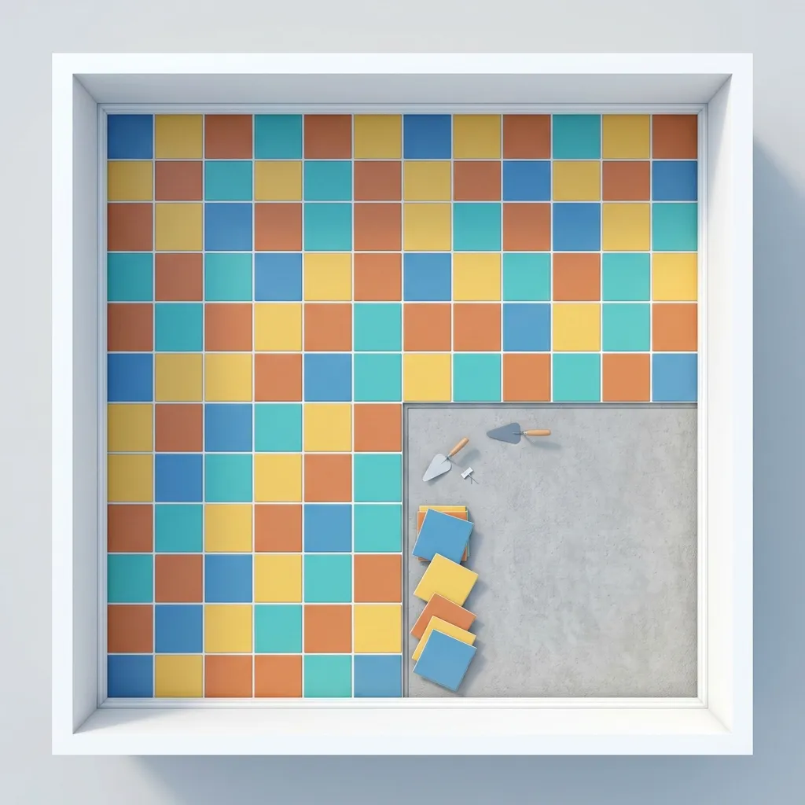
គ្រួសារមួយចង់ក្រាលការ៉ូជារាងការ៉េក្នុងផ្ទះបាយ ដែលមានផ្ទៃក្រឡា \(\displaystyle 9m^2\)។
សំណួរទី១៖ តើប្រវែងជ្រុងផ្ទះបាយស្មើប៉ុន្មានម៉ែត្រ?
ចម្លើយ៖
សំណួរទី២៖ បើការ៉ូមួយសន្លឹកមានជ្រុង \(\displaystyle 0.5m\) តើត្រូវការការ៉ូប៉ុន្មានសន្លឹក ដើម្បីក្រាលពេញផ្ទះបាយនេះ?
- ក. \(\displaystyle 18\) សន្លឹក
- ខ. \(\displaystyle 36\) សន្លឹក
- គ. \(\displaystyle 12\) សន្លឹក
- ឃ. \(\displaystyle 81\) សន្លឹក
សំណួរទី៣៖ ពន្យល់ថាតើការប្រើប្រាស់ "ឫសការេ" ជួយអ្នកក្នុងការដោះស្រាយបញ្ហានេះយ៉ាងដូចម្តេច? ចូរលើកហេតុផលបញ្ជាក់។
ការសង់សួនច្បាររាងការ៉េ
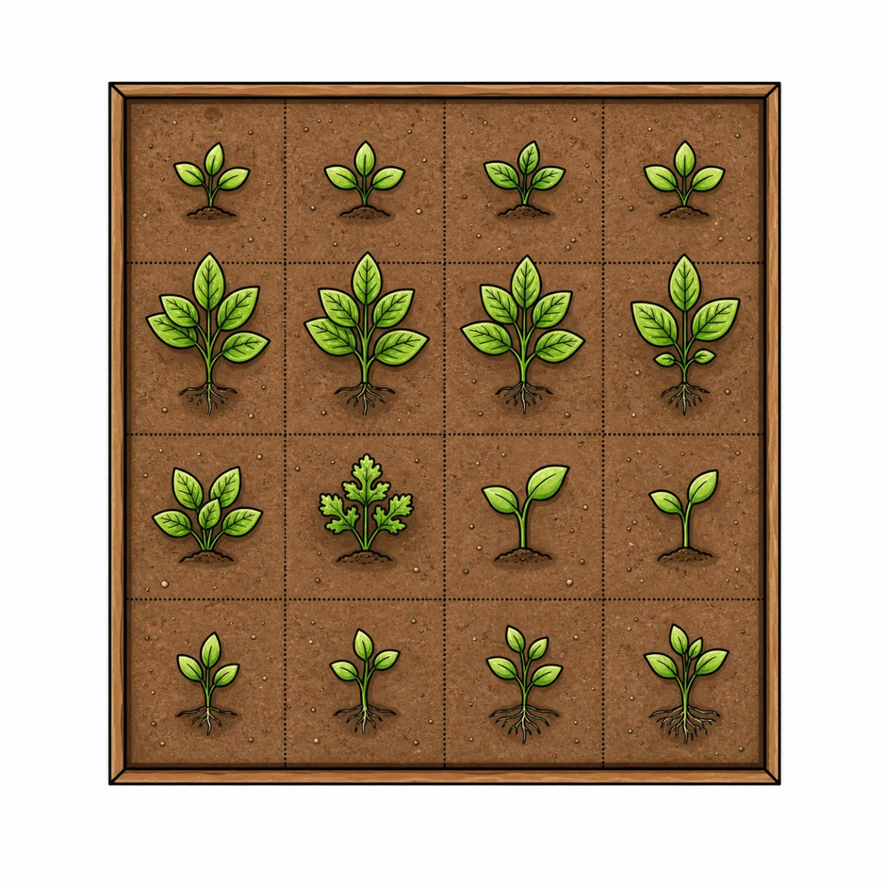
សាលារៀនមួយចង់សង់សួនច្បាររាងការ៉េថ្មីមួយ។ ពួកគេមានដីដែលអាចចាក់បំពេញផ្ទៃក្រឡាបានត្រឹមតែ \(\displaystyle 15m^2\) គត់។
សំណួរទី១៖ តើប្រវែងជ្រុងសួនច្បារនេះស្មើប៉ុន្មានម៉ែត្រ? (សរសេរជាតម្លៃពិតប្រាកដ)
ចម្លើយ៖
សំណួរទី២៖ តើប្រវែងជ្រុងដែលអ្នកបានរកឃើញខាងលើ ជាចំនួនសនិទាន ឬ អសនិទាន?
- ក. ចំនួនសនិទាន ព្រោះវាអាចសរសេរជាប្រភាគបាន។
- ខ. ចំនួនអសនិទាន ព្រោះ 15 មិនមែនជាការេប្រាកដ។
- គ. ចំនួនគត់ ព្រោះវាជារង្វាស់ប្រវែង។
- ឃ. គ្មានចម្លើយណាត្រឹមត្រូវទេ។
សំណួរទី៣៖ ហេតុអ្វីបានជាជាងសង់សួនច្បារ ត្រូវប៉ាន់ស្មានប្រវែងនេះជាទសភាគ ដើម្បីវាស់ក្នុងជាក់ស្តែង?
ចម្លើយ៖
ការរចនាកង់រទេះ
ជាងឈើម្នាក់កំពុងធ្វើកង់រទេះឈើរាងរង្វង់ដែលមានអង្កត់ផ្ចិត \(\displaystyle 1m\)។ គាត់ត្រូវការបន្ទះដែកដើម្បីរុំព័ទ្ធជុំវិញកង់នេះ។
សំណួរទី១៖ តើបន្ទះដែកនោះត្រូវមានប្រវែងប៉ុន្មានម៉ែត្រ? (សរសេរជាតម្លៃពិតប្រាកដ)
ចម្លើយ៖
សំណួរទី២៖ តើប្រវែងនៃបន្ទះដែកនោះជាចំនួនសនិទាន ឬ អសនិទាន?
- ក. ចំនួនសនិទាន ព្រោះអង្កត់ផ្ចិតជាចំនួនគត់។
- ខ. ចំនួនសនិទាន ព្រោះវាមានប្រវែងច្បាស់លាស់។
- គ. ចំនួនអសនិទាន ព្រោះវាទាក់ទងនឹងចំនួន \(\displaystyle \pi\)។
- ឃ. គ្មានចម្លើយណាត្រឹមត្រូវទេ។
សំណួរទី៣៖ បើជាងឈើត្រូវកាត់ដែកពីហាង តើគាត់គួរទិញដែកប្រវែងប៉ុន្មាន ដើម្បីឱ្យល្មម និងមានសុវត្ថិភាពក្នុងការរុំកង់នេះ (ប៉ាន់ស្មានត្រឹម ២ ខ្ទង់ទសភាគ)? ពន្យល់ពីហេតុផល។
ចម្លើយ៖
កម្រិតភាពត្រឹមត្រូវនៃរង្វាស់ (Accuracy of Measurements)
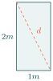
ជាងឈើម្នាក់កំពុងធ្វើទ្វារផ្ទះដែលមានទំហំ \(\displaystyle 1m \times 2m\)។ ដើម្បីបញ្ជាក់ថាទ្វារនេះមានរាងជាចតុកោណកែងល្អឥតខ្ចោះ គាត់ត្រូវវាស់អង្កត់ទ្រូងរបស់វា។
សំណួរទី១៖ តើអង្កត់ទ្រូងនៃទ្វារនេះមានប្រវែងប៉ុន្មានម៉ែត្រ? (សរសេរជាតម្លៃពិតប្រាកដ)
ចម្លើយ៖
សំណួរទី២៖ សូមគូសសញ្ញា \(\displaystyle \checkmark\) ក្នុងតារាងខាងក្រោមថាតើការអះអាងនីមួយៗ "ពិត" ឬ "មិនពិត"។
| ការអះអាង | ពិត | មិនពិត |
| ១. ប្រវែងអង្កត់ទ្រូងទ្វារនេះ អាចសរសេរជាប្រភាគនៃចំនួនគត់បាន។ | ||
| ២. បើជាងឈើវាស់បានប្រវែង \(\displaystyle 2.23\) ម៉ែត្រ មានន័យថាវាជាតម្លៃពិតប្រាកដ។ | ||
| ៣. តម្លៃពិតប្រាកដនៃអង្កត់ទ្រូងនេះ គឺជាចំនួនអសនិទាន។ |
សំណួរទី៣៖ ហេតុអ្វីបានជាជាងឈើមិនអាចវាស់ប្រវែងអង្កត់ទ្រូងនេះឱ្យបានច្បាស់លាស់ ១០០% ជាមួយម៉ែត្រវាស់ធម្មតា? ពន្យល់។
ចម្លើយ៖
ការប្រៀបធៀបផ្ទៃ និងបរិមាត្រ (Comparison of Areas)
កសិករពីរនាក់មានដីរាងការ៉េដូចគ្នា។ កសិករ ក មានដីផ្ទៃក្រឡា \(\displaystyle 16m^2\) ចំណែកកសិករ ខ មានដីផ្ទៃក្រឡា \(\displaystyle 20m^2\)។ ពួកគេចង់ធ្វើរបងព័ទ្ធជុំវិញដីរបស់ពួកគេរៀងៗខ្លួន។
សំណួរទី១៖ បំពេញតារាងខាងក្រោមដោយសរសេរតម្លៃពិតប្រាកដនៃប្រវែងជ្រុង និងបរិមាត្រ។
| ម្ចាស់ដី | ប្រវែងជ្រុង (\(\displaystyle m\)) | បរិមាត្រ (\(\displaystyle m\)) |
| កសិករ ក | ||
| កសិករ ខ |
សំណួរទី២៖ តើប្រវែងជ្រុងដីរបស់កសិករ ខ ជាចំនួនសនិទានដែរឬទេ?
- \(\displaystyle [\) \(\displaystyle ]\) បាទ/ចាស (Yes)
- \(\displaystyle [\) \(\displaystyle ]\) ទេ (No)
សំណួរទី៣៖ បើកសិករ ខ ត្រូវទិញលួសធ្វើរបងដែលលក់គិតជាម៉ែត្រគត់ តើគាត់គួរទិញលួសយ៉ាងតិចប៉ុន្មានម៉ែត្រ ទើបអាចព័ទ្ធរបងបានជុំវិញដីរបស់គាត់? ពន្យល់ហេតុផលដោយប្រើការប៉ាន់ស្មាន \(\displaystyle \sqrt{5} \approx 2.236\)។
ចម្លើយ៖
ចំណេះដឹងបន្ថែម ការសម្រួលកន្សោមរ៉ាឌីកាល់ត្រួតគ្នា \(\displaystyle \sqrt{A \pm \sqrt{B}}\)
ដើម្បីសម្រួលកន្សោមឫសការេជាន់គ្នា គេអាចប្រើរូបមន្ត
ដែល \(\displaystyle C = \sqrt{A^2 - B}\) ។ (ចំណាំ រូបមន្តនេះងាយស្រួលប្រើនៅពេលដែល \(\displaystyle A^2 - B\) ជាការេប្រាកដ) ។
ឧទាហរណ៍ ចូរសម្រួលកន្សោម \(\displaystyle \sqrt{7 + \sqrt{40}}\) ។
តាមរូបមន្តខាងលើ យើងមាន \(\displaystyle A = 7\) និង \(\displaystyle B = 40\)។
គណនា \(\displaystyle C = \sqrt{A^2 - B} = \sqrt{7^2 - 40} = \sqrt{49 - 40} = \sqrt{9} = 3\) ។
យកតម្លៃជំនួសចូលក្នុងរូបមន្ត យើងបាន
សេចក្តីសង្ខេបមេរៀន
- ចំនួនសនិទាន អាចសរសេរជាប្រភាគបាន រីឯ ចំនួនអសនិទាន មិនអាចសរសេរជាប្រភាគបានទេ (ឧទាហរណ៍ \(\displaystyle \sqrt{2}, \pi\))។
- ឫសការេ និងឫសគូប៖ បើ \(\displaystyle a>0\) និង \(\displaystyle x^{2}=a\) នោះ \(\displaystyle x=\pm\sqrt{a}\)។ បើ \(\displaystyle x^{3}=a\) នោះ \(\displaystyle x=\sqrt[3]{a}\) គ្រប់តម្លៃ \(\displaystyle a\)។
- វិធីគុណនិងចែករ៉ាឌីកាល់៖ \(\displaystyle \sqrt{a} \times \sqrt{b} = \sqrt{ab}\) ព្រមទាំង \(\displaystyle \frac{\sqrt{a}}{\sqrt{b}} = \sqrt{\frac{a}{b}}\) (សម្រាប់ \(\displaystyle a \ge 0, b > 0\))។ ឫសគូបក៏មានលក្ខណៈដូចគ្នា។
- ការបញ្ចេញនិងបញ្ចូលរ៉ាឌីកាល់៖ \(\displaystyle \sqrt{x^2} = |x|\) និង \(\displaystyle \sqrt[3]{x^3} = x\)។ សម្រាប់ការបញ្ចូល \(\displaystyle x\sqrt{y} = \sqrt{x^2y} \ (x \ge 0)\)។
- ការបូកនិងដករ៉ាឌីកាល់៖ អាចធ្វើទៅបានលុះត្រាតែមានសន្ទស្សន៍ និងរ៉ាឌីកង់ដូចគ្នា ឧទាហរណ៍ \(\displaystyle a\sqrt{x} \pm b\sqrt{x} = (a \pm b)\sqrt{x}\)។
- ការបំបាត់រ៉ាឌីកាល់ពីភាគបែង៖ ត្រូវគុណនឹងកន្សោមរ៉ាឌីកាល់ដដែល(បើមានមួយតួ) ឬគុណនឹង កន្សោមឆ្លាស់ សម្រាប់ឫសការេ និង កន្សោមបំពេញ សម្រាប់ឫសគូប (បើមានពីរតួ)។
Sដំណោះស្រាយចម្លើយសាកល្បងខ្លួនឯង (Try It Yourself)
ទី១៖ \(\displaystyle 0.2, \; 0.1, \; \sqrt{5}, \; \text{គ្មាន}, \; \frac{5}{6}, \; \sqrt{0.1}\)
ទី២៖ \(\displaystyle 0.2, \; -0.1, \; \sqrt[3]{0.08}, \; \sqrt[3]{-0.4}\)
ទី៣៖ \(\displaystyle 1, \; 1\)
ទី៤៖ \(\displaystyle \frac{1}{2}, \; 5, \; 0.1, \; 10\)
ទី៥៖ \(\displaystyle \frac{1}{2}, \; 3\sqrt{3}, \; 2\sqrt{3}, \; 3\sqrt[3]{3}, \; 5\sqrt{2}, \; \frac{\sqrt{2}}{5}\)
ទី៦៖ \(\displaystyle \sqrt[3]{\frac{1}{3}}, \; \sqrt{\frac{1}{3}}, \; \sqrt[3]{10}, \; \sqrt{\frac{4}{7}}\)
ទី៧៖ \(\displaystyle -7\sqrt{2}, \; \sqrt{3x}, \; (1+9P)\sqrt{5P}, \; 5\sqrt{3(x+1)}, \; -15\sqrt{2a}\)
ទី៨៖ \(\displaystyle \frac{\sqrt{5}-\sqrt{2}}{3}, \; -\sqrt{6}-3, \; 3(\sqrt[3]{25}+\sqrt[3]{20}+\sqrt[3]{16}), \; \frac{\sqrt[3]{12}-\sqrt[3]{6}}{2}\)
Sដំណោះស្រាយPISA L01 ដំណោះស្រាយ
ប្រធានបទទី១៖ ផ្សារទិញការ៉ូ
១. ដោយផ្ទះបាយជារាងការ៉េ និងផ្ទៃក្រឡា \(\displaystyle 9m^2\) ប្រវែងជ្រុងគឺ \(\displaystyle \sqrt{9}=3m\)។
២. ផ្ទៃក្រឡាការ៉ូមួយសន្លឹក \(\displaystyle 0.5\times0.5=0.25m^2\)។ ចំនួនការ៉ូសរុបគឺ \(\displaystyle 9\div0.25=36\) សន្លឹក។ ចម្លើយត្រឹមត្រូវគឺ ខ.
៣. ការប្រើប្រាស់ឫសការេជួយយើងឱ្យទាញរកប្រវែងជ្រុងពីផ្ទៃក្រឡាសរុប ដែលមានប្រយោជន៍ក្នុងការប៉ាន់ស្មានទំហំផ្ទៃបាត ឬរៀបចំផែនការទិញសម្ភារៈក្នុងជីវភាពប្រចាំថ្ងៃ។
ប្រធានបទទី២៖ ការសង់សួនច្បាររាងការ៉េ
១. ផ្ទៃក្រឡាសួនច្បារ \(\displaystyle 15m^2\) ដូចនេះប្រវែងជ្រុងគឺ \(\displaystyle \sqrt{15}m\)។
២. \(\displaystyle \sqrt{15}\) ជាចំនួនអសនិទាន ព្រោះ \(\displaystyle 15\) មិនមែនជាការេប្រាកដ។ ចម្លើយត្រឹមត្រូវគឺ ខ.
៣. ក្នុងការវាស់ជាក់ស្តែង គេមិនអាចវាស់ប្រវែង \(\displaystyle \sqrt{15}\) ដោយតម្លៃពិតប្រាកដលើម៉ែត្រវាស់បានទេ។ ដូចនេះត្រូវប៉ាន់ស្មានជាទសភាគ \(\displaystyle \sqrt{15}\approx3.87m\) ដើម្បីកំណត់ប្រវែងសង់ឱ្យបានជិតត្រឹមត្រូវ។
ភារកិច្ចទី៣៖ ការរចនាកង់រទេះ
១. ប្រវែងបន្ទះដែកជាបរិមាត្ររង្វង់៖ \(\displaystyle C=\pi d=\pi\times1=\pi m\)។
២. ប្រវែងនេះជាចំនួនអសនិទាន ព្រោះវាទាក់ទងនឹង \(\displaystyle \pi\)។ ចម្លើយត្រឹមត្រូវគឺ គ.
៣. ដោយ \(\displaystyle \pi\approx3.14\) ជាងត្រូវការបន្ទះដែកយ៉ាងហោចណាស់ប្រហែល \(\displaystyle 3.14m\)។ ក្នុងការកាត់ដែកជាក់ស្តែង គួរទិញលើសបន្តិច ដូចជា \(\displaystyle 3.15m\) ឬច្រើនជាងនេះបន្តិច ដើម្បីមានសុវត្ថិភាពសម្រាប់ការរុំព័ទ្ធ និងការភ្ជាប់ចុងដែក។
ប្រធានបទទី៤៖ កម្រិតភាពត្រឹមត្រូវនៃរង្វាស់
១. អង្កត់ទ្រូង \(\displaystyle d = \sqrt{1^2+2^2} = \sqrt{5}m\)។
២. ១. មិនពិត (ព្រោះវាជាអសនិទាន) ២. មិនពិត (\(\displaystyle 2.23\) គ្រាន់តែជាតម្លៃប្រហែល) ៣. ពិត (\(\displaystyle \sqrt{5}\) ជាអសនិទាន)។
៣. ម៉ែត្រវាស់មានគំនូសត្រឹមមិល្លីម៉ែត្រ ខណៈ \(\displaystyle \sqrt{5}\) ជាចំនួនទសភាគមិនចេះចប់មិនខួប ដូច្នេះវាមិនអាចចង្អុលបង្ហាញចំចំណុចច្បាស់លាស់ ១០០% លើម៉ែត្របានទេ បានត្រឹមតែតម្លៃប្រហែលប៉ុណ្ណោះ។
ប្រធានបទទី៥៖ ការប្រៀបធៀបផ្ទៃ និងបរិមាត្រ
១. កសិករ ក: ប្រវែងជ្រុង \(\displaystyle 4m\), បរិមាត្រ \(\displaystyle 16m\)។ កសិករ ខ: ប្រវែងជ្រុង \(\displaystyle \sqrt{20} = 2\sqrt{5}m\), បរិមាត្រ \(\displaystyle 4\sqrt{20} = 8\sqrt{5}m\)។
២. ទេ (ព្រោះ \(\displaystyle \sqrt{20}\) មិនមែនជាការេប្រាកដ)។
៣. បរិមាត្រដីកសិករ ខ គឺ \(\displaystyle 8\sqrt{5} \approx 8 \times 2.236 = 17.888m\)។ ដោយសារលួសលក់ជាម៉ែត្រគត់ គាត់ត្រូវទិញយ៉ាងតិច \(\displaystyle 18m\) ទើបគ្រប់។
Sដំណោះស្រាយចម្លើយលំហាត់អនុវត្តន៍
កម្រិតទី១ (កម្រិតងាយ)
លំហាត់ទី១៖ ក. \(\displaystyle 3\) ខ. \(\displaystyle 4\) គ. \(\displaystyle 6\) ឃ. \(\displaystyle -8\) ង. \(\displaystyle -10\) ច. \(\displaystyle 11\) ឆ. \(\displaystyle -12\) ជ. \(\displaystyle 25\) ឈ. \(\displaystyle 2\) ញ. \(\displaystyle -2\) ដ. \(\displaystyle -3\) ឋ. \(\displaystyle -4\) ឌ. \(\displaystyle 5\) ឍ. \(\displaystyle 6\) ណ. \(\displaystyle \sqrt[3]{100}\)
លំហាត់ទី២៖ ក. \(\displaystyle \frac{3}{4}\) ខ. \(\displaystyle \frac{7}{3}\) គ. \(\displaystyle -\frac{9}{2}\) ឃ. \(\displaystyle \frac{13}{7}\) ង. \(\displaystyle \frac{14}{5}\) ច. \(\displaystyle -\frac{4}{3}\) ឆ. \(\displaystyle \frac{1}{2}\) ជ. \(\displaystyle \frac{2}{3}\) ឈ. \(\displaystyle \frac{4}{5}\) ញ. \(\displaystyle \frac{8}{7}\) ដ. \(\displaystyle -\frac{3}{5}\)
លំហាត់ទី៣៖ ក. \(\displaystyle 64\) ខ. \(\displaystyle -6\sqrt[3]{6}\) គ. \(\displaystyle 512\) ឃ. \(\displaystyle -8\) ង. \(\displaystyle -27\) ច. \(\displaystyle 1\) ឆ. \(\displaystyle 4\) ជ. \(\displaystyle 16\) ឈ. \(\displaystyle 9\)
កម្រិតទី២ (កម្រិតមធ្យម) (សន្មតអថេរជាចំនួនវិជ្ជមាន)
លំហាត់ទី១៖ ក. \(\displaystyle y\) ខ. \(\displaystyle x^2\) គ. \(\displaystyle xy^2\) ឃ. \(\displaystyle -y^3\) ង. \(\displaystyle \frac{4}{x}\) ច. \(\displaystyle \frac{10}{n^2}\) ឆ. \(\displaystyle 2x\) ជ. \(\displaystyle -8m\sqrt{m}\)
លំហាត់ទី២៖ ក. \(\displaystyle 2x\) ខ. \(\displaystyle -5y\) គ. \(\displaystyle |4-a|\) ឃ. \(\displaystyle x+3\) ង. \(\displaystyle 4b+3\) ច. \(\displaystyle |3x-5|\) ឆ. \(\displaystyle |2m-5n|\) ជ. \(\displaystyle |7x-8y|\)
លំហាត់ទី៣៖ ក. \(\displaystyle 3\sqrt{2}\) ខ. \(\displaystyle 4\sqrt{3}\) គ. \(\displaystyle 5\sqrt{3}\) ឃ. \(\displaystyle \frac{\sqrt{30}}{7}\) ង. \(\displaystyle \frac{\sqrt{10}}{11}\) ច. \(\displaystyle 2\sqrt[3]{5}\) ឆ. \(\displaystyle 3\sqrt[3]{2}\) ជ. \(\displaystyle -4\sqrt[3]{2}\) ឈ. \(\displaystyle 4\sqrt[3]{3}\) ញ. \(\displaystyle \frac{\sqrt[3]{3m}}{2n}\) ដ. \(\displaystyle 2a\sqrt[3]{2a^2}\)
លំហាត់ទី៤៖ ក. \(\displaystyle 6ab\sqrt{b}\) ខ. \(\displaystyle 3a^2b\sqrt{3b}\) គ. \(\displaystyle 6x^2y\sqrt{2x}\) ឃ. \(\displaystyle -4ab^2\sqrt{7a}\) ង. \(\displaystyle 4m^2n\sqrt{5n}\) ច. \(\displaystyle 4y\sqrt[3]{x^2}\) ឆ. \(\displaystyle 2mn\sqrt[3]{2}\) ជ. \(\displaystyle -3xb\sqrt[3]{2x}\) ឈ. \(\displaystyle -4ay\sqrt[3]{2a^2}\) ញ. \(\displaystyle 2pq\sqrt[3]{3q^2}\)
លំហាត់ទី៥៖ ក. \(\displaystyle \sqrt{150}\) ខ. \(\displaystyle \sqrt{4m^3}\) គ. \(\displaystyle \sqrt{\frac{23}{y^6}}\) ឃ. \(\displaystyle \sqrt[3]{40}\) ង. \(\displaystyle \sqrt[3]{32x^3}\) ច. \(\displaystyle \sqrt[3]{\frac{3m}{8n^3}}\)
លំហាត់ទី៦៖ ក. \(\displaystyle \sqrt{2}\) ខ. \(\displaystyle -\sqrt{2} + 2\sqrt{3}\) គ. \(\displaystyle 2\sqrt{3}\) ឃ. \(\displaystyle -\sqrt{3} + \sqrt{17}\) ង. \(\displaystyle \frac{7}{2}\sqrt[3]{2} - 5\sqrt[3]{3}\) ច. \(\displaystyle 3\sqrt[3]{2} - \sqrt[3]{3}\)
លំហាត់ទី៧៖ ក. \(\displaystyle -\sqrt{3}\) ខ. \(\displaystyle 2\sqrt{2}\) គ. \(\displaystyle \sqrt{3}\) ឃ. \(\displaystyle 5\sqrt[3]{2}\) ង. \(\displaystyle 7\sqrt[3]{3}\) ច. \(\displaystyle 0\)
លំហាត់ទី៨៖ ក. \(\displaystyle -37\sqrt{2}\) ខ. \(\displaystyle 31\sqrt{2}\) គ. \(\displaystyle 16\sqrt{7}\) ឃ. \(\displaystyle -22\sqrt{10}\) ង. \(\displaystyle 5\sqrt[3]{2}\) ច. \(\displaystyle 14\sqrt[3]{2} - 3\sqrt[3]{3}\) ឆ. \(\displaystyle 4\sqrt[3]{2} - 12\sqrt[3]{3}\) ជ. \(\displaystyle 15\sqrt[3]{5}\)
លំហាត់ទី៩៖ ក. \(\displaystyle 7\sqrt{3} - 54\sqrt{2}\) ខ. \(\displaystyle 17\sqrt[3]{5}\) គ. \(\displaystyle -10\sqrt{3}\) ឃ. \(\displaystyle \frac{4}{3}\sqrt[3]{3} - \sqrt[3]{5}\)
លំហាត់ទី១០៖ ក. \(\displaystyle 0\) ខ. \(\displaystyle 42x\sqrt{5z}\) គ. \(\displaystyle (9ab-2)\sqrt{b}\) ឃ. \(\displaystyle 35b\sqrt{b} + 3a\sqrt{a}\) ង. \(\displaystyle x^2y\sqrt{y}\) ច. \(\displaystyle 0\) ឆ. \(\displaystyle 36a\sqrt[3]{2a}\) ជ. \(\displaystyle x(3-4y)\sqrt[3]{xy}\)
លំហាត់ទី១១៖ \(\displaystyle A = -52\sqrt{15}\) លំហាត់ទី១២៖ \(\displaystyle A = 4\sqrt{3} + 15\sqrt{2}\)
លំហាត់ទី១៣៖ ក. \(\displaystyle 6\sqrt{6}\) ខ. \(\displaystyle -8\sqrt{30}\) គ. \(\displaystyle 15\sqrt{15}\) ឃ. \(\displaystyle -72\sqrt{6}\) ង. \(\displaystyle -72\sqrt{6}\) ច. \(\displaystyle 360\) ឆ. \(\displaystyle -\sqrt[3]{6}\) ជ. \(\displaystyle 15\sqrt[3]{30}\) ឈ. \(\displaystyle -36\sqrt[3]{2}\)
លំហាត់ទី១៤៖ ក. \(\displaystyle 18\sqrt{10} - 36\sqrt{15}\) ខ. \(\displaystyle -27\sqrt{2} + 9\sqrt{6}\) គ. \(\displaystyle 12 - 6\sqrt{6}\) ឃ. \(\displaystyle 18 - 18\sqrt{6}\) ង. \(\displaystyle -8\sqrt[3]{18} + 8\sqrt[3]{15}\) ច. \(\displaystyle 6\sqrt[3]{15} - 10\sqrt[3]{10}\) ឆ. \(\displaystyle 18\sqrt[3]{3} - 18\sqrt[3]{2}\) ជ. \(\displaystyle -12\sqrt[3]{100} + 6\sqrt[3]{225}\)
លំហាត់ទី១៥៖ ក. \(\displaystyle 18\sqrt{3} + 4\sqrt{15} - 72 - 16\sqrt{5}\) ខ. \(\displaystyle 15\sqrt{10} - 120 - 20\sqrt{5} + 80\sqrt{2}\) គ. \(\displaystyle 100 - 40\sqrt{6}\) ឃ. \(\displaystyle 160 - 40\sqrt{15}\) ង. \(\displaystyle 12\sqrt[3]{18} - 18\sqrt[3]{12}\) ច. \(\displaystyle -12\sqrt[3]{25} - 12\sqrt[3]{15} + 18\sqrt[3]{20} + 18\sqrt[3]{12}\)
កម្រិតទី៣ (កម្រិតពិបាក)
លំហាត់ទី១៖ ក. \(\displaystyle -3ab = -3(3\sqrt{5}-2\sqrt{10})(3\sqrt{5}+2\sqrt{10}) = -3(45-40) = -15\)
ខ. \(\displaystyle a^2+b^2 = (45-60\sqrt{2}+40) + (45+60\sqrt{2}+40) = 170\)
គ. \(\displaystyle a^2-2b^2 = (85-60\sqrt{2}) - 2(85+60\sqrt{2}) = -85-180\sqrt{2}\)
ឃ. \(\displaystyle b^2-2ab = (85+60\sqrt{2}) - 2(5) = 75+60\sqrt{2}\)
ង. \(\displaystyle \frac{1}{2}cd = \frac{1}{2}(\sqrt[3]{18}-3)(3\sqrt[3]{6}+2) = \frac{1}{2}(9\sqrt[3]{4} + 2\sqrt[3]{18} - 9\sqrt[3]{6} - 6)\)
ច. \(\displaystyle c^2-b^2 = (\sqrt[3]{324} - 6\sqrt[3]{18} + 9) - (85+60\sqrt{2}) = \sqrt[3]{324} - 6\sqrt[3]{18} - 76 - 60\sqrt{2}\)
លំហាត់ទី២៖ ក. \(\displaystyle \frac{\sqrt{33}}{11}\) ខ. \(\displaystyle -\frac{4}{3}\) គ. \(\displaystyle 2\sqrt{5}\) ឃ. \(\displaystyle -2\sqrt{7}\) ង. \(\displaystyle \frac{\sqrt{15}}{3}\) ច. \(\displaystyle 12\sqrt[3]{3}\) ឆ. \(\displaystyle \frac{\sqrt[3]{20}}{5}\) ជ. \(\displaystyle \frac{\sqrt[3]{18}}{2}\) ឈ. \(\displaystyle \frac{\sqrt[3]{36}}{6}\)
លំហាត់ទី៣៖ ក. \(\displaystyle A = \frac{|b|}{|b-7|}\) ខ. \(\displaystyle B = \frac{|7x-4|}{|6x|}\) គ. \(\displaystyle C = \frac{|a+8b|}{|a+5b|}\) ឃ. \(\displaystyle D = \frac{|a+5b|}{|3a+4b|}\)
លំហាត់ទី៤៖ ក. \(\displaystyle \frac{3\sqrt{10}}{10}\) ខ. \(\displaystyle \frac{3\sqrt{11}}{11}\) គ. \(\displaystyle \frac{\sqrt{3}}{2}\) ឃ. \(\displaystyle \frac{8\sqrt{3}}{9}\) ង. \(\displaystyle 3\sqrt{2}\) ច. \(\displaystyle \frac{5\sqrt{10}}{12}\) ឆ. \(\displaystyle \frac{9\sqrt[3]{100}}{10}\) ជ. \(\displaystyle \frac{\sqrt[3]{100}}{5}\) ឈ. \(\displaystyle \frac{\sqrt[3]{900}}{10}\) ញ. \(\displaystyle \frac{\sqrt{7m}\sqrt[3]{6n^2}}{6n}\) ដ. \(\displaystyle \frac{\sqrt{11p}\sqrt[3]{7q^2}}{7q}\) ឋ. \(\displaystyle \frac{\sqrt[3]{6y}}{2y}\)
លំហាត់ទី៥៖
ក. \(\displaystyle \frac{18\sqrt{2}-\sqrt{3}}{2}\) ខ. \(\displaystyle \frac{\sqrt{15}+5}{30}\) គ. \(\displaystyle \frac{8}{10\sqrt{3}-15\sqrt{2}} = \frac{8(10\sqrt{3}+15\sqrt{2})}{-150} = -\frac{4(2\sqrt{3}+3\sqrt{2})}{15}\)
ឃ. \(\displaystyle \frac{2\sqrt{3}}{8\sqrt{5}-3\sqrt{5}} = \frac{2\sqrt{3}}{5\sqrt{5}} = \frac{2\sqrt{15}}{25}\) ង. \(\displaystyle \frac{9-\sqrt[3]{3}}{4\sqrt[3]{4}} = \frac{(9-\sqrt[3]{3})\sqrt[3]{2}}{8} = \frac{9\sqrt[3]{2}-\sqrt[3]{6}}{8}\)
ច. \(\displaystyle \frac{(5\sqrt[3]{4}+\sqrt[3]{3})\sqrt[3]{169}}{104} = \frac{5\sqrt[3]{676}+\sqrt[3]{507}}{104}\) ឆ. \(\displaystyle \frac{2\sqrt[3]{6}}{6-\sqrt[3]{9}} = \frac{2\sqrt[3]{6}(36+6\sqrt[3]{9}+3\sqrt[3]{3})}{207} = \frac{24\sqrt[3]{6} + 12\sqrt[3]{2} + 2\sqrt[3]{18}}{69}\)
ជ. \(\displaystyle \frac{2\sqrt[3]{2}}{2\sqrt[3]{2}-\sqrt[3]{12}} = \frac{2}{2-\sqrt[3]{6}} = \frac{2(4+2\sqrt[3]{6}+\sqrt[3]{36})}{8-6} = 4 + 2\sqrt[3]{6} + \sqrt[3]{36}\)
លំហាត់ទី៦៖ ក. \(\displaystyle \frac{3\sqrt{x}}{x}\) ខ. \(\displaystyle \frac{3\sqrt{2ab}}{4b}\) គ. \(\displaystyle \frac{3\sqrt{2y}}{10xy}\) ឃ. \(\displaystyle \frac{8\sqrt[3]{5a^2b^2}}{5b}\) ង. \(\displaystyle \frac{27\sqrt[3]{mn^2}}{7n}\) ច. \(\displaystyle \frac{15(\sqrt{2a}+\sqrt{b})}{2a-b}\) ឆ. \(\displaystyle \frac{14x\sqrt{2}-7\sqrt{6xy}}{4x-3y}\) ជ. \(\displaystyle \frac{\sqrt[3]{11}(\sqrt[3]{4m^2}+\sqrt[3]{24mn}+\sqrt[3]{144n^2})}{2m-12n}\) ឈ. \(\displaystyle \frac{7\sqrt[3]{7x}(\sqrt[3]{x^4}-2\sqrt[3]{x^2y}+4\sqrt[3]{y^2})}{x^2+8y}\)
លំហាត់ទី៧៖ តាមទ្រឹស្តីបទពីតាក័រ៖ ក. \(\displaystyle c=5\) ខ. \(\displaystyle c=13\) គ. \(\displaystyle c=10\) ឃ. \(\displaystyle a=24\) ង. \(\displaystyle a=40\)
លំហាត់ទី៨៖ គេមាន \(\displaystyle m+n = 12\sqrt{2}\) និង \(\displaystyle m-n = 2\sqrt{5}\)
\(\displaystyle \frac{mn+m^2}{m} = \frac{m(n+m)}{m} = n+m = 12\sqrt{2}\) \(\displaystyle \frac{m^2-n^2}{m+n} = \frac{(m-n)(m+n)}{m+n} = m-n = 2\sqrt{5}\)
\(\displaystyle \frac{n^2-2mn}{n^2} = \frac{n(n-2m)}{n^2} = \frac{n-2m}{n} = \frac{-6\sqrt{2}-3\sqrt{5}}{6\sqrt{2}-\sqrt{5}} = \frac{-87-24\sqrt{10}}{67}\)
លំហាត់ទី៩៖ បង្រួមសន្ទស្សន៍ឱ្យដូចគ្នា៖ \(\displaystyle \sqrt{2} = \sqrt[6]{8}\) និង \(\displaystyle \sqrt[3]{3} = \sqrt[6]{9}\) ។ ដោយ \(\displaystyle 8<9\) នោះ \(\displaystyle \sqrt{2} < \sqrt[3]{3}\)
លំហាត់ទី១០៖ \(\displaystyle A = \sqrt{22 - 2\sqrt{72}} = \sqrt{(18+4) - 2\sqrt{18 \times 4}} = \sqrt{(\sqrt{18}-\sqrt{4})^2} = 3\sqrt{2}-2\)
លំហាត់ទី១១៖ \(\displaystyle V = \pi r^2 h = \pi r^2(2r) = 2\pi r^3 \implies 6.28 r^3 = 628000 \implies r^3 = 100000 \implies r = 10\sqrt[3]{100} \text{ cm}\)
លំហាត់ទី១២៖ ក. \(\displaystyle 2^{17}+2^{17} = 2(2^{17}) = 2^{18}\) ខ. \(\displaystyle 2^{2x+3} = (2^3)^5 \implies 2^{2x+3} = 2^{15} \implies 2x+3 = 15 \implies x = 6\)
© ២០២៦ លោកគ្រូ សាន សុខលី · «គណិតវិទ្យាថ្នាក់ទី៩ បែបទំនើប» · រក្សាសិទ្ធិគ្រប់យ៉ាង។ សៀវភៅនេះកំពុងសរសេរ ខ្លឹមសារអាចនឹងកែប្រែ។